오늘의 arXiv Top 15
2026-08-26 (수) ·
cs.CV / cs.LG / cs.RO / cs.CL / cs.AI New submissions 전수 평가
cross-list · replacement 제외, 중복 병합 · Top 15은 원문까지 읽고 정리
1차 스크리닝 382편 (Claude (scheduled agent)) → Top 15 PDF 정밀 리뷰 (Claude (scheduled agent))
DreamLedger: Execution-Settled Credit Files for World-Model Imagination in Robot Decision Loops
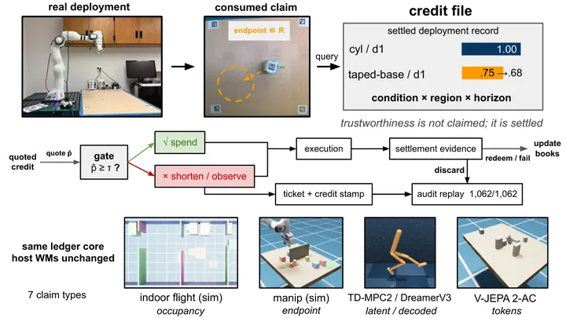
GlanceWAM: Sparse Test-Time Imagination for World-Action Models
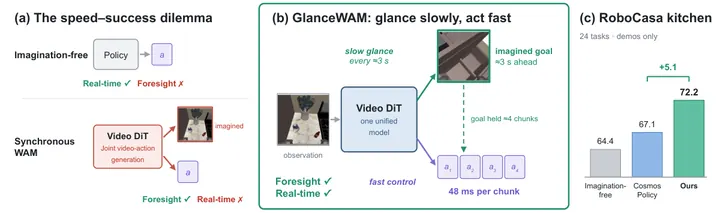
Do Robotic World Models Really Follow Actions? Diagnosing and Aligning Action-Conditioned Generation for Policy Learning
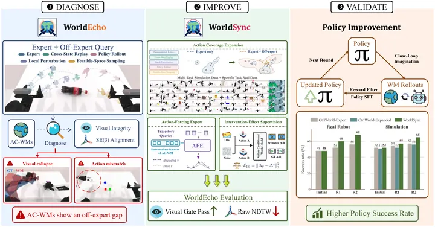
XP-JEPA: Cross-Predictive Physics Grounding for Forecastable Latent Dynamics
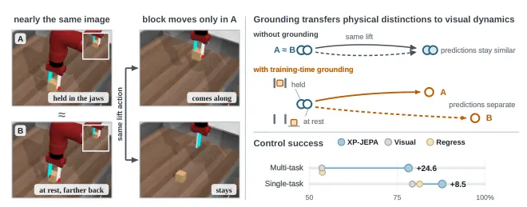
Latent Action as Intention Enables Efficient Future Imagination for World Action Models
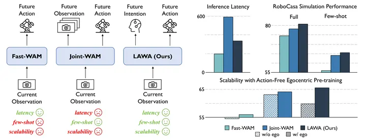
LeFlow: Generative Latent Flow Planning for World Models
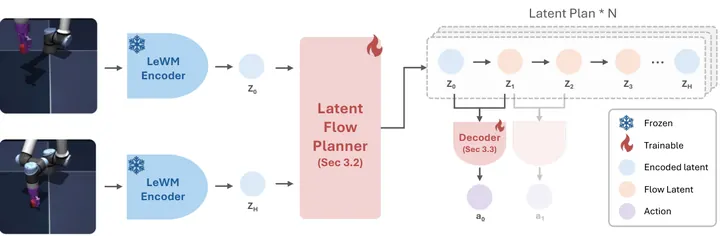
GaussianWAM: Distilling Geometry and Semantics from 3D Gaussian Fields into World-Action Models
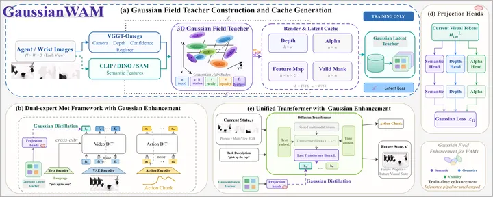
WarpSAC: Towards the Pinnacle of Scalable Off-policy RL by Rethinking Exploration and Exploitation
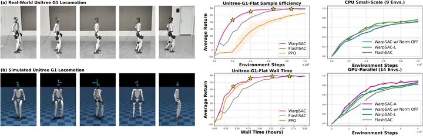
Learning to Act While Waiting: RL Finetuning of Generalist Robot Policies Under Inference Latency
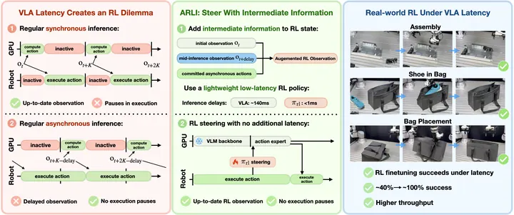
TrAct: Bridging Robot Control and Visual Prediction with Visual Tracks
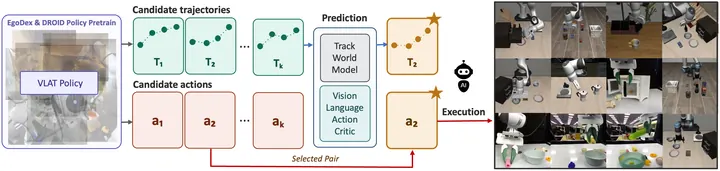
PonderPounce: A Pretrained MLLM as an Episode Context Engine for Robot Control
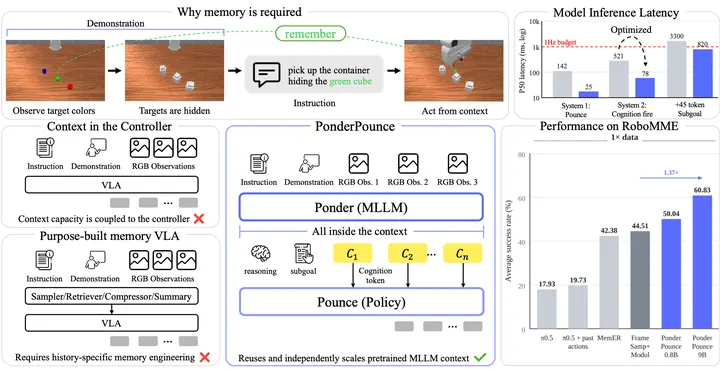
Gripper-aware Vision Language Action Models
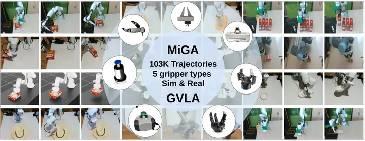
NeoWorld-Pro: Programming Interactive Scenes from Monocular Images for Embodied Simulation
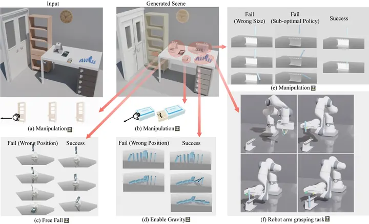
NVIDIA Cosmos-H-Dreams: Real-Time Generative Physics Simulation for Surgical Robotics
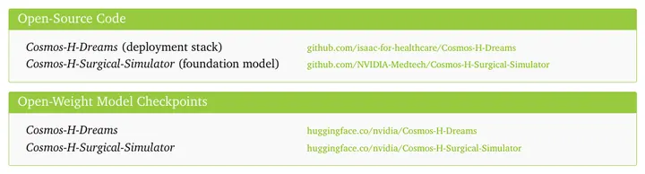
Hierarchical Skill Retrieval for Data-Efficient Adaptation of Vision-Language-Action Models
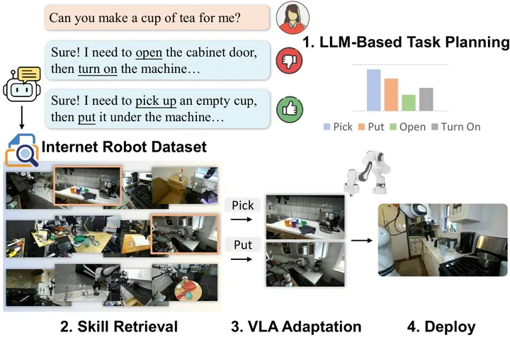
오늘의 핵심 연구 트렌드 종합
- world model test-time 상상을 latent로 압축·비동기화하는 흐름 — GlanceWAM은 pixel decoding 없이 lookahead 한 프레임만 비동기로 생성해 소비하고, LAWA는 미래 관측 대신 compact latent action만 예측하며, LeFlow는 매번 반복하는 CEM 최적화를 학습된 flow prior로 amortize함. 세 편 모두 world model 기반 test-time optimization의 병목인 반복 추론 비용을 줄이는 데 초점을 맞춤.
- world model을 얼마나 믿고 쓸지 진단·정산하는 흐름 — DreamLedger는 소비된 예측을 실행 결과로 정산해 신뢰도를 조건별로 누적 기록하고, WorldSync는 off-expert action에서 world model이 실제로 action을 따르는지 WorldEcho 벤치마크로 진단함. 둘 다 순간적 confidence 신호 대신 배포 이력을 신뢰도 판단 근거로 삼음.
- 순수 RGB reconstruction만으로는 부족한 latent를 물리·기하로 grounding하는 흐름 — XP-JEPA는 privileged physical state로, GaussianWAM은 3D Gaussian field 기반 depth·semantic teacher로 visual latent를 보강함. 둘 다 teacher는 학습 후 제거해 추론 비용 증가 없이 배포함.
- 배포 조건(지연시간·데이터 스케일·embodiment)에 맞춰 학습 방식 자체를 바꾸는 흐름 — ARLI는 비동기 inference latency로 깨지는 Markov 가정을 상태 증강으로 복구하고, WarpSAC는 CPU-scale과 GPU-parallel 데이터 레짐마다 다른 RL stabilizer 조합이 필요함을 통제 실험으로 보이며, GVLA는 gripper 종류별로 다른 soft prompt와 adapter를 씀.
- VLA 데이터·연산 효율화를 위한 중간 표현·retrieval 재사용 흐름 — TrAct는 action 대신 2D visual track을 policy와 world model 사이 매개체로 쓰고, HSR은 BC loss 기반 skill 신뢰도로 최적 plan을 골라 retrieval하며, PonderPounce는 별도 memory module 없이 MLLM의 causal context를 episode memory로 재사용함.
유망 연구 방향 및 프로젝트 제안
Latent 예측-관측 불일치를 실시간 실패 감지 신호로 쓰기 - research question: world model이 소비하는 latent lookahead(또는 latent action)와 실제 관측 latent 사이의 괴리를 policy 실행 중 실시간으로 측정해, 명시적 실패 라벨 없이 실패를 조기에 예측할 수 있는가. - 접근·novelty: GlanceWAM의 비동기 latent lookahead 소비 구조에 DreamLedger의 execution-settled 신뢰도 정산을 결합하고, WorldSync의 off-expert query(cross-state replay, local perturbation 등)로 괴리-실패 상관관계를 학습 데이터로 확보함. - 왜 지금·경쟁 prior works: 세 논문 모두 이 신호를 recommendation 수준으로만 언급하고 직접 failure detection에 쓰지 않아 gap이 뚜렷함. - risk·target venue: 실제 실패 사례를 실로봇에서 충분히 모아야 검증 가능. CoRL 또는 RSS 타겟.
Test-time optimization amortization을 실패 복구에 특화 - research question: LeFlow의 rectified-flow trajectory prior를 정상 실행이 아니라 실패 이후 재계획(replanning)에 특화하면, 실패 유형별 recovery trajectory를 CEM 없이 빠르게 생성할 수 있는가. - 접근·novelty: normal-execution 데이터뿐 아니라 WorldSync의 off-expert perturbation으로 만든 실패 상태 분포까지 flow prior 학습에 포함시켜, 실패 상태에서 목표까지의 latent path를 직접 생성하게 함. - 왜 지금·경쟁 prior works: 기존 test-time replanning은 매번 CEM full search라 recovery latency가 크고, LeFlow는 정상 실행 상황만 다룸. - risk·target venue: 실패 상태 분포를 충분히 다양하게 커버하지 못하면 일반화가 실패할 위험. CoRL 타겟.
Latent action을 embodiment-agnostic intention 표현으로 써서 cross-embodiment 학습 - research question: LAWA의 action-free egocentric video 기반 latent action tokenizer가 GVLA의 5종 gripper 데이터에서도 gripper-agnostic한 공통 intention 표현을 학습할 수 있는가. - 접근·novelty: LAWA의 latent action tokenizer를 GVLA의 MiGA 데이터셋(132개 gripper-strategy pair)으로 사전학습해, gripper별 soft prompt 없이도 latent action만으로 embodiment 차이를 흡수하는지 검증함. - 왜 지금·경쟁 prior works: GVLA는 gripper 정보를 explicit prompt로 주입하는 반면 LAWA는 action-free video만으로 latent action을 학습해 접근 방식이 대비됨. - risk·target venue: latent action이 gripper 물리적 제약(soft/suction 등)까지 흡수하지 못할 위험이 큼. CoRL 타겟.
World model 신뢰도 정산 프레임워크를 counterfactual 학습 신호로 확장 - research question: DreamLedger의 조건별 신뢰도 정산 기록을, WorldSync의 Intervention-Effect supervision(같은 observation·noise에서 action만 바꾼 예측 변화량을 GT에 맞추는 목적함수) 학습에 가중치로 넣으면 counterfactual world model 학습이 더 효율적인가. - 접근·novelty: 정산 기록이 낮은 조건(cell)에 더 많은 counterfactual perturbation 샘플을 배정하는 active data collection으로 두 방법을 결합함. - 왜 지금·경쟁 prior works: 두 논문 모두 같은 문제의식(world model이 action을 정말 반영하는가)에서 출발했지만 정산 트래킹과 counterfactual objective를 따로 다룸. - risk·target venue: 두 파이프라인을 하나의 학습 루프로 통합하는 엔지니어링 난이도가 높음. NeurIPS 또는 CoRL 타겟.
오늘 반드시 읽어야 할 논문
- DreamLedger — world model 예측을 claim으로 등록해 실행 결과로 정산하는 신뢰도 프레임워크로, 실패로 끝나는 예측 소비를 62% 줄임. 오늘 Top 15 중 최고점(77점).
- GlanceWAM — 비동기 latent lookahead로 world-action model 추론을 24배 가속하면서 RoboCasa 24-task 성공률도 동기식 baseline을 앞섬.
- XP-JEPA — privileged physical state로 시각 latent를 grounding해 rollout drift를 3배 이상 줄이고 control success를 53.6%→78.2%로 올림.
- Do Robotic World Models Really Follow Actions? (WorldSync) — action-conditioned world model이 expert action 밖에서 시각적으로 붕괴하는 문제를 WorldEcho 벤치마크로 처음 정량 진단함.
- LAWA — 미래 관측 대신 latent action만 예측해 Joint-WAM 수준 성능을 42.9% 낮은 지연시간으로 재현함.
- LeFlow — 매 state-goal pair마다 반복하던 CEM planning을 rectified-flow prior로 amortize해 planning 시간을 한 자릿수로 줄임.
- GaussianWAM — 3D Gaussian field로 depth·semantic을 world-action model latent에 distill해 LIBERO-Plus 성공률을 52.05%→71.29%로 올림.
- WarpSAC — off-policy RL stabilizer 효과가 데이터 레짐에 따라 달라짐을 통제 실험으로 밝혀 UnitreeG1 sim-to-real 성공률을 19.8%→96.4%로 끌어올림.
전체 1차 스크리닝 결과 (382편, 점수순) 펼치기
| # | 제목 | 점수 | 🤖 | 분야 | 한 줄 근거 |
|---|---|---|---|---|---|
| 1 | GlanceWAM: Sparse Test-Time Imagination for World-Action Models | 78 | 9 | World Model | world-action model에서 test-time visual imagination을 control 경로와 비동기로 분리한 GlanceWAM을 제안, RoboCasa 24-task에서 72.2%로 동기식 Cosmos Policy(67.1%) 대비 우수하고 LIBERO에서 99.0%, chunk당 48ms로 24배 빠른 실행 속도를 보여 test-time optimization과 world-action model 우선주제에 정확히 부합함. |
| 2 | XP-JEPA: Cross-Predictive Physics Grounding for Forecastable Latent Dynamics | 78 | 8 | World Model | 시각 latent world model이 물리 상태를 privileged branch로 함께 예측하도록 grounding해 rollout drift를 0.361에서 0.104로 줄이고 control success를 53.6%에서 78.2%로 올림 |
| 3 | WarpSAC: Towards the Pinnacle of Scalable Off-policy RL by Rethinking Exploration and Exploitation | 75 | 9 | RL | 대규모 병렬 시뮬레이션 환경에서 off-policy RL 안정화 기법을 데이터 규모에 맞춰 조정하는 WarpSAC를 제안하고 Unitree G1 로봇의 TransportBox task 성공률을 19.8%에서 96.4%로 올리며 sim-to-real 배포도 검증함 |
| 4 | TrAct: Bridging Robot Control and Visual Prediction with Visual Tracks | 75 | 9 | World Model | embodiment-agnostic한 visual track을 world model과 제어 사이의 매개로 써서 VLAT가 action-track을 제안하고 track-conditioned world model이 결과를 예측하며 VLA baseline 대비 real-world 성공률을 49%에서 76%로 올림 |
| 5 | Learning to Act While Waiting: RL Finetuning of Generalist Robot Policies Under Inference Latency | 72 | 9 | VLA | VLA 같은 generalist policy의 inference latency가 Markov 가정을 깨는 문제를 상태 증강으로 해결해 latency 하에서 RL finetuning이 실패하지 않게 만들고 실제·시뮬레이션 조작 과제에서 검증함 |
| 6 | LeFlow: Generative Latent Flow Planning for World Models | 72 | 8 | World Model | 학습된 latent world model 위에서 매번 처음부터 반복 최적화하던 planning을 rectified-flow로 amortize한 LeFlow를 제안, 목표 조건부 pixel-control 4개 벤치마크에서 planning 시간을 한 자릿수 단위로 줄이면서도 success rate를 일관되게 높여 test-time optimization·world model 우선주제에 정확히 부합함. |
| 7 | DreamLedger: Execution-Settled Credit Files for World-Model Imagination in Robot Decision Loops | 70 | 9 | World Model | world model 예측의 신뢰도를 소비된 예측이 실제로 맞았는지 사후 정산하는 credit file로 관리해 나쁜 예측 소비를 62% 줄이고 실제 Franka 로봇에서도 검증함 |
| 8 | GaussianWAM: Distilling Geometry and Semantics from 3D Gaussian Fields into World-Action Models | 68 | 9 | World Model | frozen depth·semantic foundation model을 3D Gaussian field로 결합해 World-Action Model의 latent representation에 geometry·semantic supervision을 distill하는 방법으로 배포 시 추가 연산 없이 LIBERO-Plus에서 FastWAM을 52%에서 71%로 끌어올려 world model과 3DGS 우선 주제를 동시에 만족함. |
| 9 | NVIDIA Cosmos-H-Dreams: Real-Time Generative Physics Simulation for Surgical Robotics | 68 | 8 | World Model | action-conditioned 수술 로봇 world model을 causal student로 distill해 160FPS 실시간 생성 시뮬레이션을 만들고 사람·학습 정책 모두 실시간 폐루프로 조작 가능하게 함 |
| 10 | Latent Action as Intention Enables Efficient Future Imagination for World Action Models | 66 | 9 | World Model | 미래 관측 생성 없이 compact latent action으로 미래 의도를 표현해 world-action model의 test-time inference를 가속하는 방법으로 RoboCasa에서 Fast-WAM 대비 4.5~9.6점 개선과 42.9% 지연 감소를 실로봇까지 보였음. |
| 11 | Do Robotic World Models Really Follow Actions? Diagnosing and Aligning Action-Conditioned Generation for Policy Learning | 65 | 9 | World Model | action-conditioned world model이 expert 궤적 밖의 다양한 action을 얼마나 충실히 따르는지 진단하는 WorldEcho 벤치마크와 이를 개선하는 WorldSync를 제안해 world model을 policy 평가용 시뮬레이터로 쓸 때의 핵심 가정을 검증한 연구임. |
| 12 | Gripper-aware Vision Language Action Models | 63 | 9 | VLA | parallel-jaw·suction 등 5종 gripper에 걸친 10만3천 demonstration 데이터셋과 gripper-conditioned tokenizer로 VLA의 embodiment invariance 가정을 깬 연구로 VLA의 gripper 일반화라는 우선 주제에 직접 해당함. |
| 13 | Hierarchical Skill Retrieval for Data-Efficient Adaptation of Vision-Language-Action Models | 62 | 8 | VLA | 장기 조작 과제를 재사용 가능한 skill sequence로 분해해 검색하는 hierarchical retrieval로 VLA를 데이터 효율적으로 적응시키고 LIBERO와 실로봇에서 성공률을 각각 10.3%p, 21.3%p 높임 |
| 14 | PonderPounce: A Pretrained MLLM as an Episode Context Engine for Robot Control | 62 | 8 | VLA | 사전학습 MLLM을 System2 episode memory로, VLA를 System1 실행기로 붙여 별도 memory module 없이 로봇 memory를 구현하고 RoboMME에서 baseline 대비 큰 폭으로 성공률을 높임 |
| 15 | NeoWorld-Pro: Programming Interactive Scenes from Monocular Images for Embodied Simulation | 62 | 7 | Embodied AI | 단일 RGB 이미지를 MLLM으로 코드 생성해 물리엔진에서 검증·정제하는 절차적 프로그래밍으로 바꿔 상호작용 가능한 시뮬레이션 장면을 만드는 NeoWorld-Pro를 제안, stable stacking과 정교한 조작 같은 다운스트림 태스크까지 검증해 embodied simulation asset 생성에 직접 기여함. |
| 16 | CoDrift: Compositional Drifting for Offline Reinforcement Learning | 62 | 6 | RL | offline-to-online RL에서 behavioral·value 목적을 action-space motion field로 합성하는 one-step generative policy 방법이고 OGBench·D4RL 73개 task에서 SOTA에 근접한 평균 순위를 기록함 |
| 17 | Trajectory-Level Continuous Action Representation for Robotic Manipulation | 58 | 7 | Manipulation | 제어 주파수에 무관한 trajectory 단위 continuous action latent(CAT)를 제안해 LIBERO·MimicGen·실로봇 장기 조작에서 VQ 기반·연속 baseline보다 일관되게 높은 성공률을 보임 |
| 18 | Macro-Operator Generation and Predicate Selection for TAMP Operator Learning | 55 | 7 | Manipulation | 시연 데이터에서 causally linked action pair를 macro-operator로 자동 생성하고 불필요한 predicate를 가지치기해 TAMP 계획 속도를 최대 4.6배 높이고 baseline이 못 푸는 장기 과제를 해결함 |
| 19 | NeurRAFT: Robot Motion Planning via Anchor-Level Flow Matching with Clearance-Aware Preference Tuning | 55 | 7 | Manipulation | 앵커 단위 flow matching과 clearance 선호를 DPO로 반영한 로봇 motion planner로 실제 Franka에서 노이즈·가림이 있는 depth 관측에도 zero-shot 전이를 보임 |
| 20 | CARO: Contact-Agnostic Residual Observation for Zero-Shot Robust Quadruped Locomotion | 52 | 7 | RL | torque 센서나 접촉 추정 없이 fixed-base Euler-Lagrange 모델 기반 residual observation으로 quadruped 외란 적응을 학습한 sim-to-real 연구임 — payload·terrain 변화에 대한 zero-shot 강건성은 보이나 locomotion 도메인 한정이고 방법론적 novelty는 제한적임. |
| 21 | EgoErrorVQA: Assess Egocentric Comprehension Capabilities through Procedural Errors for Ego-Agentic AI | 52 | 5 | Embodied AI | 1인칭 시점에서 절차적 오류를 탐지하는 능력을 평가하는 EgoErrorVQA 벤치마크와 Ego-ADR 추론 프레임워크를 제안, VLM들이 절차 오류 탐지에 지속적으로 취약함을 드러내 failure detection·egocentric embodied reasoning 우선주제에 직접 부합함. |
| 22 | Where Entropy Is Measured Matters: Policy Geometry in Bounded Continuous-Control PPO | 52 | 5 | RL | bounded continuous-control PPO에서 entropy를 측정하는 latent 공간에 따라 policy가 action 경계 근처로 쏠리는 현상을 MyoLeg·Dog-Stand 환경에서 분석함 |
| 23 | Platonic Representation Hypothesis on World Models | 52 | 4 | World Model | DINO World Model 변형들을 비교해 world model들이 shared state transition objective 하에서 기하학적으로 유사한 latent 구조로 수렴한다는 Predictive Consistency Assumption을 model stitching으로 검증한 표상 분석 연구임. |
| 24 | One-Shot Learning from Demonstration of Contact-Rich Robotic Manipulation by Identifying Physical Interactions | 50 | 8 | Manipulation | 접촉의 생성·해제 시점을 명시적으로 모델링해 단 한 번의 시연만으로 문·자물쇠 개방 같은 contact-rich task를 재현하는 LfD 방법으로 물리적 상호작용 정보를 활용한 robustness·generalization·online adaptation을 모두 실로봇으로 보였음. |
| 25 | Robust Slip Detection and Material Classification via Spatiotemporal Transformers on a Uniformly-Illuminated Visuo-Tactile Sensor | 50 | 7 | Manipulation | 균일 조명 visuo-tactile 센서와 spatiotemporal transformer로 slip 방향까지 세밀하게 분류하는 촉각 인지 연구로 미지 물체에서도 90%대 정확도를 달성함 |
| 26 | Concept-Guided Exploration: Building Persistent, Actionable Scene Graphs | 50 | 6 | Embodied AI | 사전 metric map 없이 room·door concept agent가 협력적으로 지속적인 scene graph를 구축하는 concept-first exploration 아키텍처임 |
| 27 | Joint-Embedding Prediction of Masked Point Tubes for Self-Supervised Learning on 4D Point Cloud Videos | 50 | 5 | 3D Vision | 4D 포인트 클라우드 비디오에 대해 좌표 복원 대신 masked point tube의 latent representation을 예측하는 JEPA 스타일 자기지도 학습을 제안, reconstruction 중심 학습보다 상위 수준의 표상을 얻어 object-centric 4D 표상과 world model 계열 연구에 직접 참고할 만함. |
| 28 | Resilience Matters for Embodied Agents System: New Metrics, Systematic Evaluation, and Optimization | 48 | 6 | Embodied AI | embodied agent system의 success rate만으로는 못 보는 rebound·stability·graceful extensibility를 정의해 400개 가정 과제·10개 시스템으로 resilience를 정량 평가함 |
| 29 | Sensorless damage-safe grasping | 48 | 6 | Manipulation | 힘-토크 센서 없이 인코더 위치와 모터 부하만으로 압축 변형률을 추정해 과일 손상을 막는 grasping controller로, 손상률을 100%에서 40%로 줄임 |
| 30 | Gen2Physics: Grounding Generated 3D Meshes in Physics via Multi-View Material Decomposition | 48 | 5 | 3D Vision | 생성된 3D mesh를 재질별로 분해해 물리엔진에서 바로 시뮬레이션 가능한 asset으로 만드는 Gen2Physics를 제안, 재질 분할 정확도를 15.6에서 48.3 mIoU로 두 배 이상 높여 로봇 시뮬레이션 asset 제작에 바로 쓸 만함. |
| 31 | Interpreting Control Latents for System Identification via Conditional Flow Matching | 45 | 6 | Manipulation | 적응 정책의 control latent를 conditional flow matching으로 물리 파라미터 분포로 복원해 quadrotor 제어기 튜닝과 강건성 분석에 쓰는 system identification 방법임 |
| 32 | CARE: Camera-Residual Reserves for First Sightings in Adaptive LiDAR Sensing | 45 | 5 | Navigation | 카메라로 탐지됐지만 과거 track으로 설명 안 되는 방향에 LiDAR ray budget 일부를 예약하는 학습 없는 CARE 정책을 제안, nuScenes에서 첫 발견 recall을 최대 5.2포인트 높이고 실차·closed-loop 시뮬레이션에서 가려진 보행자를 더 빨리 감지·제동해 active perception/NBV 우선주제에 부합함. |
| 33 | AHEAD: Adaptive Hindsight with Environment-Augmented Distillation for Agentic RL | 45 | 5 | RL | ALFWorld·WebShop 등 agentic RL에서 step 유형별로 다른 privileged information을 주는 self-distillation 방법으로 embodied task 벤치마크를 다뤄 long-horizon skill 학습과 관련이 있음 |
| 34 | Partial Identification under Causal Orders by Linear Programming | 45 | 3 | LG | 인과 그래프 전체 없이 query가 함의하는 순서만으로 counterfactual bound를 LP로 구하는 연구로 counterfactual reasoning의 일반화 가능한 이론 도구에 해당함 |
| 35 | RoG-DAgger: Rollout-Guided Post-Training for End-to-End Driving | 42 | 5 | RL | DAgger의 takeover 시점·expert 시야 불일치 문제를 rollout 기반으로 개선해 end-to-end driving policy를 post-training하는 방법이며 Bench2Drive·Longest6에서 뚜렷한 개선을 보였으나 도메인이 자율주행에 한정됨. |
| 36 | SonarLLM: A Native Sonar--Optical Multimodal Large Language Model for Underwater Perception | 42 | 5 | Multimodal | sonar-optical 멀티모달 LLM으로 수중 인식을 다루는 연구로 탁도 변화에 따른 센서 융합이 로봇 active perception과 직접 연결됨 |
| 37 | Recursive Experiential-Working Memory Evolution for Long-Horizon Agent Harnesses | 42 | 5 | LG | working memory와 experiential memory를 결합해 long-horizon agent의 skill 학습을 재귀적으로 진화시키는 구조로 robot memory·skill chaining 연구에 아이디어로 참고할 만함 |
| 38 | Game2World Engine: Unlocking In-the-Wild Gameplay Videos for World Model Training | 42 | 4 | World Model | 게임 화면의 UI 오버레이를 세계 자체와 분리해 제거하는 G2WEngine과 GameCleaner를 제안, UI를 제거한 데이터로 학습한 world model의 VideoReward가 6.83% 개선돼 인터넷 게임 영상을 world model 학습 데이터로 정제하는 실용적 파이프라인을 제공함. |
| 39 | Fiber Optic Sensing Glove for High Performance Dexterous Manipulation Capture | 40 | 6 | Manipulation | multi-core fiber shape-sensing 기반 손 pose 추적 glove로 occlusion 없이 motion capture급 정확도를 내지만 teleoperation 데이터 수집용 하드웨어 기여이고 학습 방법론적 기여는 없음. |
| 40 | Pivot-and-Station Multi-Agent Path Finding: Solvability, Complexity, and Algorithms | 40 | 6 | Navigation | 창고형 다중 로봇이 pivot 방문 후 station에 도착하는 MAPF 변형 문제의 해결가능성·복잡도·알고리즘을 다뤄 multi-robot 경로계획에 직접 해당함 |
| 41 | Variance-Guided Spatial Attention Fusion for Robust End-to-End Driving under Asymmetric Sensor Degradation | 40 | 4 | Navigation | 카메라·LiDAR가 부분적으로만 손상되는 비대칭 열화 상황에서 픽셀별 신뢰도를 물리적 결함 심각도에 맞춰 보정하는 VG-SAF를 제안, CARLA Longest6에서 학습 범위 밖 열화에도 closed-loop robustness를 일관되게 높여 자율주행 센서 실패 대응에 참고할 만함. |
| 42 | $(\text{DNN})^2$: Doubly Non-Negative Relaxations for Deep Neural Networks | 40 | 4 | RL | ReLU 신경망 verification의 doubly non-negative relaxation을 Burer-Monteiro로 확장해 안전 중요 자율 시스템의 controller·perception module 검증을 조이는 방법이나 실제 로봇 실험은 없음 |
| 43 | SceneReGen: Generative Reconstruction of 3D Scenes from a Single Image | 40 | 3 | 3D Vision | 단일 이미지로부터 3D scene을 재구성할 때 object-level generative prior의 object frame과 scene frame 간 간극을 selective pose factorization으로 메운 SceneReGen으로, embodied AI scene 재구성에 활용 가능한 object-centric 3D 표상 기여임. |
| 44 | Scaling Reinforcement Learning for Diffusion Models via Velocity Matching | 40 | 1 | CV | diffusion reward fine-tuning에서 likelihood 기반 policy gradient 없이 velocity field를 직접 매칭하는 RVM을 제안해 RAM·DiffusionNFT를 특수 케이스로 포함시키는 일반화된 프레임워크를 보였으나 robotics 적용은 없음. |
| 45 | ConsensusTAS: Self-Supervised Temporal Action Segmentation for Long-Horizon Construction Videos | 38 | 4 | Embodied AI | 라벨 없이 candidate segmentation들의 내부 합의만으로 건설 현장 작업을 구간화하는 ConsensusTAS를 제안, 실제 벽돌쌓기 영상에서 세부 동작을 인식해 이동 로봇 플랫폼의 human-robot collaboration에 바로 쓸 수 있는 CPU 실행 가능한 방법임. |
| 46 | Event-Based Motion Estimation via Oriented Distance Fields | 38 | 4 | CV | event 카메라의 motion 추정을 반복 최적화 없이 사전 계산된 distance field 위에서 한 번의 평균 연산으로 처리하는 ODF Motion Estimation을 제안, sub-pixel 정확도와 최저 지연을 달성하고 deblurring·eye tracking에 적용해 저지연 active perception에 참고할 만함. |
| 47 | SPO++: Stream-Aligned Policy Optimization for Asynchronous Agentic RL | 38 | 4 | RL | 비동기 agentic RL에서 advantage 정규화를 token 단위로 맞춘 SPO++ 방법으로 ALFWorld를 포함한 long-horizon 벤치마크에서 검증해 참고할 만함 |
| 48 | DDMS: Discriminative Distillation of Multi-view Foundational Features into Single-view Models | 38 | 3 | 3D Vision | 다시점 기하 추정 모델의 3D 지식을 단일시점 모델에 재증류해 3D 일관성 있는 foundation feature를 얻는 논문으로, object-centric 3D 표상 관점에서 로봇 인식에 참고할 만함. |
| 49 | A Durable Vision-Based Tactile Fingertip for Robotic Manipulation | 36 | 6 | Manipulation | GelSight·DIGIT 대비 100배 이상 내구성을 갖춘 vision-based tactile fingertip을 제안했으나 하드웨어 내구성 개선이 중심이라 학습·representation 관점의 기여는 약함. |
| 50 | Safety-aware Model Predictive Path Integral Control with Signal Temporal Logic | 35 | 5 | Navigation | Signal Temporal Logic 명세를 control barrier function으로 바꿔 MPPI에 통합한 안전 인지 planning 방법으로 Mars rover 시나리오와 쿼드콥터 실험으로 검증함 |
| 51 | KLTNet: Learning Sparse Feature Tracking for Robust and Accurate Monocular Visual-Inertial Odometry | 35 | 4 | Navigation | 고전 KLT tracker를 대체하는 경량 학습형 sparse feature tracker KLTNet을 제안, coarse-to-fine dense-to-sparse 구조와 anisotropic confidence로 VINS-Mono·OpenVINS의 visual-inertial odometry 정확도를 저조도 텍스처 환경에서도 실시간으로 개선해 로봇 navigation front-end에 바로 적용 가능함. |
| 52 | From Seeing to Acting: Smart Glasses as First-Person Intelligence Platforms | 35 | 4 | Embodied AI | 스마트 글래스를 1인칭 지능 플랫폼으로 보고 capture부터 embodied coupling까지 L0-L5 단계로 정리한 서베이로, egocentric embodied AI 논의에 참고할 만하나 새 방법이나 실험은 없음. |
| 53 | PhysMLLMs: Spatial Priors for Unified Referring Segmentation and Grounded Reasoning of Images and Videos | 35 | 4 | Video | video MLLM에 물리 영감 spatial prior를 distillation으로 주입해 referring segmentation의 시간적 일관성을 높인 연구로 object-centric 표현 관점에서 참고할 만함 |
| 54 | Bellman Calibration for Marginalized Importance Weighting in Offline Reinforcement Learning | 35 | 3 | RL | offline RL의 marginalized importance weighting에서 occupancy-balance 위반을 1차원 isotonic calibration으로 교정하는 방법임 |
| 55 | Reflection with Action-Induced Visual Differences for Desktop GUI Agents | 35 | 3 | Multimodal | 데스크톱 GUI agent의 reflection 단계에서 action 전후 화면 차이를 근거로 검증하는 방법으로 failure detection과 유사한 구조를 보이나 로봇 실험은 없음 |
| 56 | Are Android GUI Agents Robust Against Runtime Anomalies? AnTrap: Evaluating Agents in Dynamic Adversarial Environments | 35 | 3 | Multimodal | Android GUI agent를 런타임 이상 상황에 노출시켜 강건성을 평가한 벤치마크로 실행 중 anomaly에 대한 failure recovery와 문제의식이 비슷하나 도메인은 스마트폰 GUI임 |
| 57 | Strictly Causal Streaming Video Anomaly Detection with a Theoretically-Grounded State-Space Core | 35 | 3 | Video | state-space 모델 기반 strictly causal streaming video anomaly detection으로 지연시간을 이론적으로 도출하고 edge 하드웨어에서 검증해 실시간 이상 탐지 구조가 로봇 failure detection에 참고될 만함 |
| 58 | Primate vision reveals a missing principle for robust dynamic AI | 35 | 2 | CV | 원숭이 IT 피질과 영상 인식 모델을 비교해 대부분의 비디오 인식 모델이 외형이 바뀌어도 움직임 구조가 유지될 때 일반화에 실패함을 보인 신경과학-AI 비교 연구로, 강건한 동적 표상 설계에 시사점이 있으나 robotics 직접 적용은 없음. |
| 59 | LAION-BVD: A 10-Million-Hour Open Video Dataset for Multimodal Pre-training | 35 | 2 | Video | CommonCrawl에서 8천만 개, 천만 시간 분량의 비디오를 수집해 멀티모달 사전학습용으로 공개한 LAION-BVD로, 대규모 비디오-오디오-이미지 데이터셋 구축 자체가 기여이며 video/multimodal foundation model 우선주제와 관련됨. |
| 60 | From Causal Plausibility to Causal Reliability: Evaluating LLMs as Calibrated Direct Causal-Edge Classifiers | 35 | 2 | NLP | LLM을 causal discovery의 direct-edge classifier로 쓸 때 신뢰도가 실제로 보정돼 있는지 12개 모델·6개 벤치마크로 평가, recall 편향과 신뢰도 오보정을 드러내 causal reasoning 우선주제와 관련되나 로봇 도메인 검증은 없음. |
| 61 | On-Policy Self-Distillation in Diffusion Models | 35 | 1 | CV | diffusion RL에서 endpoint reward만으로는 중간 denoising step의 목표가 불분명한 문제를, on-policy behavior trajectory에서 앵커를 뽑아 명시적 clean-output 타깃으로 바꾸는 DiffusionOPSD를 제안한 생성모델 정렬 연구임. |
| 62 | VIP: Variation-based Iterative-learning Planning for Robotic Navigation | 33 | 5 | Navigation | trajectory를 이산 변수 대신 연속 함수 공간에서 업데이트하는 변분 기반 반복 학습 planner로 계산 복잡도를 O(n)으로 낮췄지만 single/swarm robot motion planning이라는 좁은 문제에 머무름. |
| 63 | TransPhy: Visual In-Context Learning for Physically Grounded Image Editing | 32 | 2 | CV | 물리적 속성에 좌우되는 이미지 변환을 예시 쌍에서 배워 새 이미지에 적용하는 TransPhy를 제안, 물리 법칙 유도와 조건부 렌더링을 분리한 접근이 embodied spatial reasoning에 참고될 수 있으나 검증 대상은 이미지 편집임. |
| 64 | Disentangled Skill Representations for Predictive Human Modeling | 32 | 2 | LG | 레이싱·야구 도메인에서 인간 skill을 counterfactual subskill swap으로 disentangle된 embedding으로 모델링한 연구로 로봇 적용은 다루지 않음 |
| 65 | Steering Recurrent Reasoners at Inference Time with Readout Feedback | 32 | 2 | RL | recurrent reasoning model의 readout 확률을 test-time에 latent dynamics로 되먹여 Sudoku·Maze 성능을 올리는 inference-time steering 방법으로, 로봇 정책이 아닌 추상 추론 벤치마크에서만 검증함 |
| 66 | Robust Data-Collection Policy Learning for Low-Variance Online Policy Evaluation | 32 | 2 | RL | transition uncertainty에 강건한 data-collection policy를 학습해 online policy evaluation 분산을 줄이는 RL 방법이나 로봇 실험은 없음 |
| 67 | It depends: Incorporating correlations for joint aleatoric and epistemic uncertainties of high-dimensional output spaces | 32 | 2 | CV | low-rank+diagonal 공분산으로 aleatoric·epistemic uncertainty를 함께 모델링해 image inpainting·optical flow·depth estimation의 UQ 성능을 높인 방법으로 로봇 인식에 쓰이는 depth·optical flow 태스크를 다룸 |
| 68 | Syn2RealTrack: Bridging the Gap Between Synthetic and Real-World Datasets for Online Multi-View Multi-Target Tracking | 30 | 3 | 3D Vision | 창고 환경 다중 카메라 3D 인식에서 synthetic-to-real gap을 카메라 캘리브레이션·형상 사전·census 가정 세 지점으로 분해해 각각 대응하는 Syn2RealTrack을 제안, 물류 로봇 인식의 sim2real 문제에 참고할 만함. |
| 69 | When Seeing Is Not Enough: Benchmarking Interactive Visual Grounding in LVLMs | 30 | 3 | Multimodal | LVLM의 interactive visual grounding 벤치마크로 embodied spatial reasoning과 결이 비슷하나 로봇 실험은 없음 |
| 70 | Adaptive Influence Graphs for Failure Attribution in Multi-Agent Systems | 30 | 3 | NLP | 멀티에이전트 LLM 시스템의 실패 원인을 그래프로 구조화해 찾는 연구로 failure attribution 문제의식은 로봇 failure diagnosis와 통하나 도메인은 LLM 시스템임 |
| 71 | Luce: Relightable Gaussians for 3D Asset Generation | 30 | 2 | 3D Vision | geometry와 PBR material을 함께 담는 voxelized multimodal Gaussian cloud로 단일 이미지에서 relightable 3D asset을 생성하는 Luce를 제안, Toys4K에서 FID를 최강 baseline 대비 28% 개선했으나 로봇 응용보다 그래픽스 파이프라인 중심임. |
| 72 | Automata from Agent Traces: Failure and Next-Step Prediction | 30 | 2 | AI | LLM agent의 실행 trace 전체를 하나의 유한 상태 기계로 압축해 다음 행동과 실패를 예측하는 방법으로 failure detection이라는 우선 주제와 개념적으로 맞닿아 있으나 텍스트 agent 대상이고 물리 로봇 적용은 없음. |
| 73 | Recursive Agentic Reasoning | 30 | 2 | NLP | test-time reasoning을 GROW/PRUNE/BRANCH로 통합 분석했으나 LLM 추론 벤치마크 한정이라 로봇 적용 근거는 없음 |
| 74 | Coverage Planning for Robotic Tooth Preparation in Densely Constrained Environments | 28 | 4 | Manipulation | 치아 삭제용 로봇의 toolpath planning과 end-effector yaw 배정을 다루는 치과 로봇 응용 논문으로 조작 일반 원리보다는 특정 임상 적용에 초점을 둠 |
| 75 | Fiber Bragg Grating Whiskers for Bioinspired Hydrodynamic Perception on Underwater Robots | 28 | 4 | Embodied AI | 물개 vibrissae를 모사한 fiber Bragg grating whisker로 수중 로봇의 유체역학적 신호 감지를 구현했으나 단일 whisker로 방향 판별하는 초기 단계 실험이라 학습 기반 기여는 없음. |
| 76 | X-MULTI: VLM-based Imaging Factor Disentanglement for Factor-Aware Image Synthesis | 28 | 3 | Multimodal | 카메라 렌즈·센서 타입 같은 imaging factor를 이미지 생성에서 분리 제어하는 MULTI를 VLM 감독으로 확장한 X-MULTI로, 학습에 없던 조합까지 정렬을 개선했으나 검증이 이미지 합성 벤치마크에 머물러 로봇 센서 일반화로의 직접 적용은 확인 안 됨. |
| 77 | SIREN-Bench: Behavior-Driven Generation and Evaluation of Emergency-Vehicle Interactions | 28 | 3 | Navigation | SUMO-CARLA co-simulation으로 응급차량-일반차량 상호작용을 생성해 detection·trajectory prediction·VLM 위험 이해를 평가하는 자율주행 벤치마크임 |
| 78 | SeMoCo: A Semantic-First Motion Codec for Motion Language Modeling | 28 | 2 | CV | motion token을 semantic token과 kinematic residual로 분리하는 semantic-first motion codec SeMoCo로 text-to-motion 생성을 다루나, 검증 대상이 애니메이션 캐릭터 모션이라 robot manipulation과는 거리가 있음. |
| 79 | MoTE: Mixture of Task Experts for Multi-Task Video Understanding | 28 | 2 | Video | action recognition·forecasting·procedure prediction을 하나의 디코더로 처리하되 task별 sparse expert로 라우팅하는 MoTE를 제안, video understanding 우선주제에는 해당하나 로봇 조작 검증은 없음. |
| 80 | Equivariant Covariance Tensors: Guaranteed SPD Uncertainty for Tensor-Valued Geometric Learning | 28 | 2 | 3D Vision | E(3)-equivariant network의 rank-2 tensor 예측에 SPD 공분산을 보장하는 uncertainty quantification 방법으로 로봇 적용은 다루지 않으나 equivariant 3D 텐서 표현과 관련성 있음 |
| 81 | SkillForge: Evolving Verifiable Skills for Reinforcement Learning Agents | 28 | 2 | RL | 환경 상호작용으로 skill을 검증·정제하며 계속 진화시키는 RL agent skill bank 프레임워크로 skill chaining이라는 우선 주제와 개념적으로 닿아 있으나 ALFWorld·WebShop 등 텍스트 agent 환경에 한정됨. |
| 82 | Exploit More, Explore Smarter for Budget-Constrained Agentic Search | 28 | 2 | AI | budget이 제한된 tree search에서 확장 자체를 정보 가치 결정으로 취급하는 ExTS를 제안해 prompt 최적화·코드 생성 등에 적용했으며 test-time optimization의 일반적 도구라는 점에서 우선 주제와 닿아 있으나 로봇 실험은 없음. |
| 83 | Can a Dynamic Internal Field Govern a Transformer's Cognition? Certifiability, not Superiority, in Homeostatic Compute Control | 28 | 2 | LG | PDE 기반 동적 내부 필드로 transformer의 연산량을 제어하는 연구로 test-time compute 조절이라는 문제의식은 있으나 로봇 적용과는 거리가 멂 |
| 84 | Bridging Teacher Expectations and Robot Learning via Coupling Dynamics | 25 | 3 | Embodied AI | 인간 교사와 로봇 학습기 간 coupling dynamics를 분류하는 척도를 제안하고 기존 human-robot teaching 문헌에 적용한 리뷰 성격 연구임 |
| 85 | DoublesEval: Diagnosing Multi-Agent Tactical Reasoning in Vision-Language Models via Professional Doubles Badminton | 25 | 2 | Multimodal | 복식 배드민턴 경기를 테스트베드로 VLM의 multi-agent tactical reasoning을 진단하는 DoublesEval 벤치마크로, 다중 에이전트 공간-시간 추론 평가라는 점은 흥미로우나 스포츠 도메인이라 로봇 응용과는 거리가 있음. |
| 86 | Confident at the moment of action: belief miscalibration in LLM play under hidden information | 25 | 2 | RL | 숨은 정보 체스에서 LLM의 발화 confidence와 실제 정답률 간 괴리를 측정한 연구로 confidence 기반 행동 게이팅이 로봇 실패 감지와 문제의식은 통하나 도메인은 게임임 |
| 87 | AffineTok: Semantic Affine Consistency for Diffusion-Friendly Visual Tokenizer | 25 | 1 | CV | diffusion tokenizer가 clean-image semantics의 평균이 아니라 실제 semantics에 정렬되도록 semantic recovery objective를 정의한 논문으로, 생성모델 표상 설계에 관한 기여이나 robotics와는 거리가 있음. |
| 88 | Continual Visual Learning under Evolving Semantic Concept Shift | 25 | 1 | CV | 분류 taxonomy 자체가 바뀌는 evolving semantic concept shift 상황에서 obsolete mapping만 선택적으로 재작성하는 SemReWrite를 제안, 장기 운용 로봇 시스템의 개념 갱신 문제와 맥이 닿지만 검증은 이미지 분류 벤치마크에 국한됨. |
| 89 | Revelation Control | 25 | 1 | RL | priced intervention이 결정에 미치는 정보 가치를 다루는 이론이나 검증이 Qwen·Mistral LLM 실험에 그쳐 로봇 active perception과는 별개임 |
| 90 | Physics-Integrated Operator Learning via Gaussian Splatting Representations | 25 | 1 | LG | PDE 연산자 학습에 Gaussian splatting을 연속 표현 인터페이스로 써서 물리 연산자를 직접 통합하는 논문으로 scene representation이 아닌 PDE surrogate에 초점을 둠 |
| 91 | Knowing When to Ask for Help: Bayesian Self-Escalation in Hierarchical LLM Agents | 25 | 1 | RL | LLM agent가 추론 중 실패 가능성을 베이지안 posterior로 감지해 상위 모델로 escalate하는 방법으로, 로봇이 아닌 코드 에이전트 실험에 그침 |
| 92 | Meta$^n$: Recursive Self-Improvement through Emergent Depth | 25 | 1 | LG | 메타 연산을 고정한 채 재귀적으로 자기개선하는 LLM agent 아키텍처로 ARC-AGI-2에서 성과를 보였으나 로보틱스와는 무관함 |
| 93 | NeuralParker: A Reinforcement Learning Planner for Irregular Parking Environments | 24 | 4 | Navigation | 임의 pose 주차를 위한 RL 기반 hybrid planner로 실차 검증까지 했지만 특정 응용(주차)에 국한된 engineering 기여라 일반화 가능성이 낮음. |
| 94 | BrowserForge: Scaling Web Episode via Parallel Browser Sandboxes | 23 | 2 | Multimodal | 스크린샷만으로 동작하는 웹 agent 학습을 위해 20만 개 이상의 다양한 웹사이트 상호작용 궤적을 병렬 브라우저 샌드박스로 수집한 데이터 파이프라인으로 시각 기반 행동 정책 학습이라는 점에서 VLA와 방법론적으로 유사하나 물리 로봇 적용은 없음. |
| 95 | Cross-Generation Optimization of YOLOv26, YOLOv11, and YOLOv8 for Fine-Grained Small-Object Detection and Instance Segmentation in Complex Orchards | 22 | 3 | CV | 과수원 로봇 인식을 위해 YOLOv8/v11/v26을 세 스케일로 비교한 벤치마크 논문으로, 새 방법론 없이 기존 detector 성능 비교에 그쳐 novelty가 낮음. |
| 96 | Restoring Without Forgetting: Continual Learning Across Image Degradations | 22 | 1 | CV | 복원 모델이 새 열화 유형을 순차적으로 학습해도 기존 지식을 잊지 않도록 경량 adapter를 다는 continual learning 프레임워크로, 특정 도메인 문제에 국한됨. |
| 97 | HAP: Head-Adaptive Visual Token Pruning via Cross-Modal Alignment | 22 | 1 | Multimodal | VLM의 head별 텍스트-이미지 정렬 품질을 측정하는 PAQ 지표로 시각 토큰을 pruning하는 HAP를 제안, VLA 배포 효율화에 참고할 수 있으나 efficiency 중심 기여라 우선순위가 낮음. |
| 98 | WeMM-Embedding: WeChat Multi-Modal Embedding Technical Report | 22 | 1 | Multimodal | 텍스트·이미지·비디오·문서를 아우르는 2B/4B/9B 규모의 범용 멀티모달 임베딩 모델 WeMM-Embedding을 공개한 기술 리포트로 새로운 방법론적 기여보다 스케일업 성격이 강함. |
| 99 | ViSculpt: Visual-Centric Agentic Geometry Editing | 22 | 1 | 3D Vision | training-free multi-agent 시스템이 Blender에서 기존 3D mesh를 시각적으로 감독하며 편집하는 ViSculpt로 로봇 조작보다는 그래픽스 저작 도구에 해당함. |
| 100 | Keep-or-Drop? Adaptive Tokenizer for Compact Video Representation | 22 | 1 | CV | video latent diffusion용 VAE가 spatio-temporal complexity에 맞춰 토큰 수를 적응적으로 선택하는 KATok을 제안, 비디오 생성 효율화 기여로 로봇 우선순위와는 거리가 있음. |
| 101 | What Does Prompt Learning Change? -A Natural-Language Concept Analysis of Vision-Language Models | 22 | 0 | CV | CLIP prompt learning이 실제로 어떤 개념을 바꾸는지 자연어 사전으로 분해해 분석한 PromptSpLiCE로 해석가능성 연구이며 robotics와 무관함. |
| 102 | Renormalization Group Flow Matching for Scalable Local Generative Modeling | 22 | 0 | LG | 국소 모델의 장거리 상관 손실 문제를 renormalization group으로 잇는 flow matching 생성모델로 robotics와 무관한 이론적 생성모델 연구임. |
| 103 | A Theory of Speciation in Generative Diffusion Models on Compact Riemannian Manifolds | 22 | 0 | LG | 구면 등 compact manifold 위 diffusion model의 speciation을 topology로 분석하는 이론 논문이라 로보틱스 적용은 없음 |
| 104 | The Loss Floor of Denoising Score Matching: Fisher Geometry from Schrödinger Bridges | 22 | 0 | LG | denoising score matching의 loss floor를 Fisher-Rao geometry로 규명하는 diffusion 이론 논문임 |
| 105 | MaST: Motion-aware Sparse Pipeline for Lightweight Object Tracking | 20 | 2 | CV | 노이즈가 컸던 초기 레이어 토큰 점수 문제를 motion-aware sparse pipeline으로 해결한 경량 추적기 MaST로, edge 배포를 겨냥한 효율화 기여라 로봇 우선순위에서는 낮음. |
| 106 | Pattern-Derived Visual Swarm Games: Multi-Scale Drone-Vision States for Interception and Sustainability Audits | 20 | 2 | Navigation | 실제 드론을 조종하지 않고 drone-vision annotation을 게임이론적 swarm 상태로 변환한 audit 프레임워크로, 로봇 조작·정책 학습과는 거리가 있고 논지가 난해함 |
| 107 | Design-to-Plan: A Large Language Model-Based Multi-Agent Framework for Manufacturing Process Planning from 3D CAD Models and 2D Engineering Drawings | 20 | 2 | Manipulation | 3D CAD와 2D 도면에서 제조 공정 계획을 만드는 LLM multi-agent 프레임워크로 물리적 로봇 조작보다는 제조 공정 계획 자동화에 초점을 둠 |
| 108 | EviDx: Evidence-Aware Active Diagnosis with Scaffolded LLM Agents | 20 | 2 | NLP | 임상 진단에서 증거 수집 종료 시점을 판단하는 agent 프레임워크로 언제 증거가 충분한지 판단한다는 점에서 active perception 문제의식과 유사하나 도메인은 의료임 |
| 109 | DriftAD: Visually-Guided Text Drift for Few-Shot Industrial Anomaly Detection | 20 | 1 | CV | CLIP 기반 few-shot 산업 이상탐지에서 정적 텍스트 프롬프트의 한계를 지적하고 시각 유도 텍스트 drift 모듈을 추가한 논문으로 module 추가 수준의 개선임. |
| 110 | IterCAD: Iterative Program Repair for CAD Code Generation from Orthographic Views | 20 | 1 | CV | 치수 표기된 정투상도에서 실행 가능한 parametric CAD 코드를 반복적으로 수정하며 생성하는 IterCAD로, 기하 이해와 프로그램 수정이라는 점에서 조작 대상 설계에 참고할 수 있으나 robotics 직접 적용은 아님. |
| 111 | Human-Inspired Social Engagement Analysis via Interpretable Mutual Visual Attention | 20 | 1 | CV | 상호 시선 이론에 기반해 이자 관계의 사회적 참여도를 해석 가능하게 측정하는 프레임워크로 교사·보호자 대상 응용이며 robotics와는 거리가 있음. |
| 112 | Contrastive Branch Policy Optimization | 20 | 1 | RL | RLVR에서 branch sampling으로 tool-use LLM agent의 token-level credit assignment를 분리하는 방법임 |
| 113 | Beyond Uniform Local Isometry and Topology: FactoMap for Disentangled Representations | 20 | 1 | LG | factor space의 위상·비균일 geometry를 반영한 topographic map으로 disentangled representation을 개선하는 방법임 |
| 114 | ExpConCAD: Experience-Guided Text-to-CAD Generation from Shape Descriptions with Implicit Spatial Constraints | 20 | 1 | 3D Vision | CAD 설계 경험을 재사용해 텍스트에서 누락된 공간 제약을 보완하는 text-to-CAD 방법으로 3D representation과 맞닿아 있으나 CAD 프로그램 생성이라는 좁은 도메인에 머무름. |
| 115 | LLM Agents Perform Controlled Experiments Using Simulation Models | 20 | 1 | AI | LLM agent가 시뮬레이션 모델로 controlled experiment를 설계·실행해 공정 파라미터를 최적화하는 프레임워크로 개입 기반 추론이라는 점은 test-time optimization과 닿아 있으나 도메인이 제약 공정 설계라 로봇과는 거리가 있음. |
| 116 | VideoHarness-RSI: Recursive Harness Self-Improvement for Long-Video Understanding with Frozen Vision-Language Models | 20 | 1 | Video | 고정된 VLM 주변에서 long-video 컨텍스트 구성 프로그램을 재귀 탐색하는 연구로 video understanding과 관련은 있으나 로봇 적용 근거는 없음 |
| 117 | Parason: Revealing Subtask and Trial Parallelism in LLM Reasoning | 20 | 1 | NLP | LLM 추론의 subtask/trial 병렬성을 학습해 지연시간을 줄인 test-time 방법으로 로보틱스와 무관함 |
| 118 | Fidelity Preference, Not Demographic Preference: A Pixel-Level Attribute-Sensitivity Audit of Image Aesthetic/Preference Scorers | 20 | 0 | CV | LAION-Aesthetics 등 미학 스코어러 4종을 픽셀 단위 개입으로 감사한 결과 skin-lightness 편향이 인구통계 선호가 아니라 원본 이미지 보존 선호(fidelity preference)임을 보인 논문으로, robotics와 무관한 bias audit 연구임. |
| 119 | Too much of a good thing -- when knowledge distillation promotes overfitting, and how to avoid it | 20 | 0 | LG | 지식증류를 중간 레이어에 적용할 때 오히려 과적합을 유발할 수 있음을 보이고 이를 완화하는 방법을 제안한 일반 딥러닝 분석 연구로 robotics와 무관함. |
| 120 | Representation Learning in Diffusion and Flow-based Model: An Application Aspect | 20 | 0 | CV | diffusion·flow 기반 생성모델의 표상학습을 응용 관점에서 정리한 서베이로 새 방법 제안 없이 문헌 정리에 그침. |
| 121 | Rubrics as Visual-Repair Context for Self-Evolving UI-to-Code Generation | 20 | 0 | Multimodal | UI-to-code 생성의 test-time self-evolution에서 국소 수정이 다른 영역을 깨뜨리는 visual repair coupling 문제를 rubric 기반으로 완화한 RubSE로, self-refinement 아이디어는 있으나 도메인이 로봇과 무관한 UI 코드 생성임. |
| 122 | TurboT2VA: Fast Large-Scale Text-to-Video-Audio Generation via Score-Regularized Consistency Distillation | 20 | 0 | Multimodal | 190억 파라미터 text-to-video-audio 모델을 score-regularized consistency distillation으로 가속하는 TurboT2VA로, 생성 효율화 기여라 로봇 우선순위와는 거리가 있음. |
| 123 | Data Predictability Shapes Weibull Weight-Scale Growth in Transformer Training | 20 | 0 | LG | 트랜스포머 가중치 크기 분포가 Weibull로 요약되고 그 scale 파라미터가 코퍼스의 bigram 조건부 엔트로피로 예측된다는 학습 동역학 이론 연구로 robotics와 무관함. |
| 124 | MemUse: Moving Memory Evaluation from Direct QA to Natural Integration in Long-Term Human-AI Conversation | 19 | 1 | NLP | LLM 대화 메모리 평가를 direct QA에서 자연스러운 대화 통합 여부로 전환해 만족도와의 상관을 재검토한 연구로 robot memory와 문제의식은 비슷하나 대상이 챗봇 대화 메모리라 로봇 적용은 없음. |
| 125 | Object Counting Across Modalities: Taxonomies, Benchmarks, Applications, and Open Challenges | 18 | 1 | CV | class-specific density regression에서 open-vocabulary foundation model 기반 counting으로의 전환을 다루는 서베이로 평가 인프라 부족을 지적하나 새 방법 제안은 없음. |
| 126 | VisCache: Visual KV Cache Pruning for Efficient Vision Large Language Model Inference | 18 | 1 | Multimodal | VLLM의 긴 컨텍스트 추론 비용을 줄이려 시각 토큰 KV cache를 헤드·레이어 별로 세분화해 pruning하는 학습 없는 VisCache를 제안, 효율화 위주 기여라 로봇 연구 우선순위와는 거리가 있음. |
| 127 | Rethinking Pre-Training and Augmentation for Zero-Shot Cross-City Object Detection | 18 | 1 | CV | 교통 감시 카메라의 도시 간 도메인 시프트에 대응하는 pretraining·augmentation 파이프라인으로 robotics와 무관한 CV 도메인 적응 연구임. |
| 128 | Markerless Pose Estimation for Resistance Training Technique Assessment | 18 | 1 | CV | BlazePose로 스쿼트·벤치프레스·데드리프트 자세를 관절각으로 변환해 저항운동 자세를 평가하는 markerless pose estimation 응용 연구로 robotics와 무관함. |
| 129 | ZODIAC: Zero-shot Octree-based Diffusion for Anatomical Completion | 18 | 1 | 3D Vision | 수술 중 초음파로부터 척추 3D 형상을 zero-shot으로 완성하는 octree 기반 diffusion ZODIAC으로, 3D shape completion 기법이나 응용은 의료 도메인에 한정됨. |
| 130 | Causal Analysis for Time Series Foundation Models | 18 | 1 | LG | 합성 개입 실험으로 Chronos-2·TimesFM-2.5 같은 시계열 foundation model의 편향을 사전에 찾는 causal 분석 프레임워크임 |
| 131 | IAPO: Influence-Aware Policy Optimization for Credit Assignment in Multi-Turn Service Agents | 18 | 1 | RL | 서비스 LLM agent의 multi-turn 상호작용에서 influence-dependency graph로 credit을 재분배하는 RL 방법이나 로봇이 아닌 tool-use agent 벤치마크에서만 검증함 |
| 132 | Improving Cross-Problem Vehicle Routing with Locally Augmented Preferences and Representation Disentanglement | 18 | 1 | RL | local search로 보강한 preference pair와 task별 expert encoder로 multi-task vehicle routing의 cross-problem 일반화를 높인 방법임 |
| 133 | Taming Visual Neglect: A Variational Information Bottleneck Framework for Adaptive Attention in Multimodal In-Context Learning | 18 | 1 | Multimodal | multimodal in-context learning에서 시각 정보가 언제 무시되는지를 information bottleneck 이론으로 설명한 연구로 로봇 도메인과의 접점은 없음. |
| 134 | Does Episodic Memory Help Close the Lexical Frequency Gap in Sensitivity to Syntactic Contrasts? A Test Using Retrieval-Augmented Language Models | 18 | 1 | NLP | retrieval-augmented LM의 k-NN 메커니즘을 hippocampal episodic memory에 비유해 어휘 빈도 격차를 좁히는지 검증한 언어학 연구로 robot memory와 개념적으로만 맞닿아 있고 실제 로봇 적용은 없음. |
| 135 | Memory Is Not Always Needed: Characterizing Conditional Memory in Scientific Reasoning | 18 | 1 | NLP | 과학 추론에서 conditional memory 라우팅을 분석했으나 도메인이 생물·화학 QA라 robot memory와는 거리가 있음 |
| 136 | The Blending Ratio Is Not Where the Performance Is: Diagnosing Prototype Blending for Few-Shot Adaptation of Vision-Language Models | 18 | 0 | CV | few-shot VLM 적응에서 zero-shot 프로토타입과 이미지 평균을 섞는 blending ratio를 James-Stein 추정으로 검증한 진단성 연구로, robotics와 무관하고 기여도 기존 방법 분석에 그침. |
| 137 | Partial Optimal Transport on the Circle for All Transported Masses in O(N log N) | 18 | 0 | LG | 원형 데이터에서 partial optimal transport를 O(N log N)에 푸는 알고리즘 논문으로 로보틱스 적용 제시는 없음 |
| 138 | PinSieve: Production Selective VLM Serving and a Governed Memory Flywheel for Enterprise Content-Quality Triage | 18 | 0 | Multimodal | 기업 콘텐츠 품질 심사를 위한 selective VLM serving과 memory flywheel을 다루는 production 시스템 사례임 |
| 139 | More Rejective, Not More Discriminative: The Unit of Verification in Pre-Execution LLM Oversight | 18 | 0 | NLP | LLM 사전 실행 감시에서 검증 단위 크기를 통제 실험으로 분석한 연구로 로보틱스와는 무관함 |
| 140 | AI Finds A Way | 17 | 1 | RL | 26개 사례를 통해 RL·foundation model이 보상을 예기치 않게 편법으로 최적화한 사례를 정리한 연구로 reward hacking에 대한 경고성 자료이며 로봇 실험은 없음. |
| 141 | AgentSpec: Speculative Decoding for Batch Inference of LLM Agents | 16 | 0 | LG | LLM agent의 batch 추론에서 speculative decoding 성능 저하 원인을 분석하고 개선한 시스템 논문으로 robotics 적용은 다루지 않음. |
| 142 | Is Discrete Difficulty Sufficient? Leveraging Continuous Difficulty for Efficient Self-Consistency in LLMs | 16 | 0 | LG | 문제 난이도를 연속값으로 추정해 self-consistency의 샘플 수를 동적으로 조절하는 추론 효율화 방법으로 robotics 원리 제공은 없음. |
| 143 | PlaceSeek: Human-Centered Geospatial Retrieval of Urban Outdoor Places via Semantic Grounding and Affective Alignment | 15 | 1 | Multimodal | 도시 야외 장소를 기능·감성 의도로 나눠 자연어로 검색하는 PlaceSeek로 robotics와는 거리가 먼 geospatial retrieval 연구임. |
| 144 | Comparative Assessment of Deep Learning Architectures for Underwater Subsurface Kelp Forest Segmentation with The Kelp-o-Tron | 15 | 1 | CV | 수중 켈프 숲 분할을 위해 ResNet34-U-Net 등 세 아키텍처를 비교 평가한 벤치마크 연구로 새 방법론 없이 기존 모델 비교에 그침. |
| 145 | Low-Latency Activation-Regularized Sparse Neural Operators with Distillation Assistance Towards Real-Time Edge-Deployable Virtual Sensing | 15 | 1 | LG | neuromorphic edge 센싱을 위한 sparse activation layer로 latency-error-energy를 개선한 efficient inference 논문임 |
| 146 | ChorusTIC: Training-Free Multivariate Time Series Classification via Chorus In-Context Learning | 15 | 1 | LG | 합성 episode만으로 사전학습해 target-specific fine-tuning 없이 다변량 시계열을 분류하는 in-context learning 모델임 |
| 147 | Joint Distribution Alignment for Universal Domain Adaptation | 15 | 1 | CV | source·target label space가 다른 universal domain adaptation의 generalization bound와 정렬 알고리즘을 제안한 이론+방법 논문임 |
| 148 | Bandit Submodular Maximization under Matroid Constraints: Learning Compressed Exchange Policy | 15 | 1 | LG | matroid 제약 하 adversarial bandit submodular maximization의 첫 sublinear regret 알고리즘을 제시한 이론 논문임 |
| 149 | Single State Update Predictive Coding training for Time Series Forecasting and Anomaly Detection | 15 | 1 | LG | 두 predictive coding network를 병렬로 맞춰 순차적 역전파 없이 시계열 예측·이상탐지를 학습하는 방법임 |
| 150 | Parameter-Level Attribution of Symmetry in Trained Networks Though Parameter-Wise Functional Sensitivity | 15 | 1 | LG | 학습된 네트워크의 함수 대칭이 파라미터 공간에서 실현 가능한 조건을 functional sensitivity로 규명한 이론 논문임 |
| 151 | Enhancing Bayesian Optimization and Active Learning Through Kernel Diversity | 15 | 1 | LG | kernel ensemble과 disagreement-aware acquisition으로 MCMC 없이 Bayesian optimization·active learning을 가속하는 방법임 |
| 152 | Mitigating Exploration Bias in RL for Multi-Instruction Following | 15 | 1 | RL | 다중 instruction을 따르는 LLM RL 학습에서 쉬운 지시로 쏠리는 exploration bias를 완화하는 방법으로 RL 방법론이지만 embodied 맥락이 아니라 우선 주제와의 접점은 약함. |
| 153 | Beyond Confidence: Test-Time Scaling for Multi-Turn Search Agents via Retrieval Grounding | 15 | 1 | NLP | multi-turn search agent의 confidence voting 실패를 분석한 test-time scaling 연구로 도메인이 QA 검색이라 로보틱스 관련성 낮음 |
| 154 | Task-Adaptive Rubrics for GUI Reward Modeling | 15 | 1 | RL | GUI agent reward model을 위한 task-adaptive rubric 생성 방법으로 로보틱스와 무관함 |
| 155 | Beyond Accuracy: A Dual-Judge Evaluation Protocol for Vision-Language Models in Legally Grounded Tasks | 15 | 1 | Multimodal | 교통표지 해석 VLM을 dual-judge로 평가한 법적 AI 연구로 occlusion 조건별 신뢰도를 다루나 로보틱스와는 거리가 있음 |
| 156 | Real-World Knowledge-Guided Change Data Synthesis for Remote Sensing | 15 | 1 | CV | VLM으로 원격탐사 change detection용 합성 데이터를 생성하는 연구로 로보틱스와는 거리가 있음 |
| 157 | Selective Regenerative Decoding: Trajectory-Level Intervention for Inference-Time Reasoning | 15 | 1 | NLP | 궤적 일부만 재생성하는 selective decoding으로 inference-time reasoning 효율을 높인 연구로 로보틱스와 무관함 |
| 158 | Reinforcement Learning-Guided Evolutionary Policy Optimization for Preference-Adjustable Heterogeneous Agile Earth Observation Satellite Scheduling | 15 | 1 | RL | 위성 관측 스케줄링을 RL 유도 진화 알고리즘으로 최적화한 연구로 로봇 매니퓰레이션과는 거리가 있는 조합최적화 문제임 |
| 159 | More Motion Is Not Always Better Motion: Corpus Composition Governs Whether Augmentation Helps SMPL-Based Parkinsonian Gait Severity Estimation | 15 | 0 | CV | SMPL 기반 파킨슨병 보행 중증도 추정에서 pretraining corpus 구성이 augmentation 효과를 좌우함을 보인 의료 응용 연구로 robotics와 무관함. |
| 160 | CRISP: Calibration-Aware Visual State Space Duality for Remote Sensing Semantic Segmentation | 15 | 0 | CV | 원격탐사 영상 분할에서 Visual State Space Duality의 경계 뭉개짐 문제를 주파수 보정 모듈로 완화한 논문으로 특정 도메인의 모듈 추가에 그침. |
| 161 | LUCAID: Agentic Multimodal AI for Lung Cancer Precision Pathology | 15 | 0 | CV | 폐암 정밀 병리 진단을 위한 agentic multimodal AI 시스템으로 임상 검증까지 수행했으나 robotics와 무관한 의료 AI 논문임. |
| 162 | LG-GER: Language-Guided Group Emotion Recognition via Multimodal Evidence Distillation | 15 | 0 | CV | 그룹 감정 인식을 위해 MLLM이 생성한 spatial evidence로 증류하는 LG-GER를 제안한 논문으로 robotics와 무관함. |
| 163 | ROI-Gated SAHI: Content-Adaptive Slicing-Based Inference for Efficient Object Detection | 15 | 0 | CV | SAHI의 배경 타일 연산 낭비를 줄이려 ROI 기반 gating을 추가했으나 static gating은 Full SAHI보다 오히려 느려 실효성이 제한적임. |
| 164 | RefineRank: Joint Box Refinement and Ranking for Surgical Spatio-Temporal Grounding | 15 | 0 | CV | 수술 영상에서 질문이 가리키는 대상을 매 프레임 위치·랭킹하는 RefineRank를 제안한 의료 vision-language 논문으로 robotics와 무관함. |
| 165 | Source-Face Authenticity Detection for 3D Gaussian Heads Reconstructed from a Single Portrait: A Benchmark and Dedicated Detector | 15 | 0 | CV | 단일 초상화에서 재구성한 3D Gaussian head의 진위 판별을 위한 최초의 벤치마크와 탐지기를 제안한 논문으로 robotics와 무관함. |
| 166 | Absorbing Gradient Conflicts: Modeling Semantic Variance via Kent Distributions for Cross-Modal Hashing | 15 | 0 | CV | cross-modal hashing에서 class proxy를 고정점 대신 Kent 분포로 모델링해 다중 레이블 gradient 충돌을 완화한 논문으로 robotics와 무관함. |
| 167 | Low-Rank Velocity Fields as a Structural Prior for Unsupervised 4D Medical Image Interpolation | 15 | 0 | CV | 시작-끝 volume만으로 4D 의료 영상을 보간할 때 motion을 low-rank Tucker velocity field로 제약하는 방법으로 robotics와 무관함. |
| 168 | Phase-Aligned Finite-Fourier Periodic Deformation for 4D Medical Image Interpolation | 15 | 0 | CV | 심장·흉부처럼 반복적인 4D 의료 영상의 위상 정렬을 위해 finite-Fourier 주기 변형을 사용하는 방법으로 robotics와 무관함. |
| 169 | MatReplace: A Reference-Free, Conditioning-Aligned Benchmark for Material Replacement in Interior Scenes | 15 | 0 | CV | 실내 디자인에서 표면 재질만 바꾸는 material replacement 작업을 위한 reference-free 벤치마크로 robotics와 무관함. |
| 170 | SandwichQuant: Which Parameters Matter Before and After Quantization? | 15 | 0 | LG | 양자화 보정에서 정규화-affine 파라미터 부분공간이 효율적임을 보이고 양자화 전후 두 단계로 보정하는 SandwichQuant로, quantization 효율화 연구라 로봇 연구 우선순위에서 낮음. |
| 171 | Amortized Set Prediction for Inverse IFS Reconstruction from Density Maps | 15 | 0 | CV | fractal 이미지의 visit-frequency density map에서 IFS 파라미터를 한 번의 forward pass로 추정하는 amortized inverse 방법으로 robotics와 무관한 니치 주제임. |
| 172 | Beauty is in the ELBO of the Beholder: A Variational Account of Processing Fluency in Face Perception | 15 | 0 | CV | 얼굴 대칭·평균성 같은 통계적 규칙성이 매력도와 관련된다는 가설을 VAE의 ELBO로 검증한 인지과학-AI 연구로 robotics와 무관함. |
| 173 | Example-based Robust Abnormality Detection with Minimal Annotations using Exemplar Med-DETR | 15 | 0 | CV | grounding text가 부족한 의료 영상 이상탐지 문제를 예시 기반 few-shot 탐지기로 완화한 Exemplar Med-DETR로 robotics와 무관함. |
| 174 | B-MIM: Biased Masked Image Modeling for Generalizable Segmentation of Fine-Grained Anatomical Structures | 15 | 0 | CV | CT 인코더의 iBOT objective를 국소 재구성 쪽으로 편향시켜 미세 해부 구조 민감도를 높인 B-MIM으로 robotics와 무관한 의료 표상학습 논문임. |
| 175 | Bridging Adversarial and Collaborative Learning for AI-Generated Image Quality Assessment | 15 | 0 | CV | AI 생성 이미지 품질 평가에서 지각 충실도와 prompt 정합성이 상호작용한다는 점을 밝히고 이를 적응적으로 조율하는 방법으로 robotics와 무관함. |
| 176 | Vision Language Model Fusion for Explainable Face Recognition | 15 | 0 | CV | 여러 VLM을 결합해 얼굴 인식 결정에 대한 설명을 생성하는 explainable face recognition 연구로 robotics와 무관함. |
| 177 | Low-Rank Ternary Adaptation for Fine-Tuning Transformers | 15 | 0 | LG | ternary transformer를 위해 sign flip 등 이산 업데이트를 low-rank Kronecker 인수분해로 표현하는 LoRA 변형으로, quantization 효율화 기여라 로봇 우선순위에서는 낮음. |
| 178 | Hierarchical Prototype-Memory Adaptation of SAM for Surgical Instrument Segmentation | 15 | 0 | CV | SAM을 수술 도구 분할에 적응시킬 때 prototype이 downstream loss만으로 과적합되는 문제를 계층적 prototype-memory로 완화한 연구로 robotics와 무관함. |
| 179 | ReGround-Surg: Reliability-Guided Anchor Grounding for Referring Surgical Video Segmentation | 15 | 0 | CV | SAM2 기반 수술 영상 지시 분할에서 초기 프레임의 잘못된 anchor가 추적 오류로 전파되는 문제를 신뢰도 기반으로 완화한 ReGround-Surg로 robotics와 무관함. |
| 180 | TorchMorph: CUDA-accelerated Morphological Transforms | 15 | 0 | CV | CPU 전용이던 형태학 연산을 GPU 학습 루프 안에서 쓸 수 있게 만든 PyTorch 확장 TorchMorph로, 로봇 연구보다는 범용 CV 도구에 해당함. |
| 181 | IDeaL: Data-Free Multi-Teacher Distillation via Improved Dead Leaves | 15 | 0 | CV | 여러 teacher를 데이터 없이 distillation할 때 서로 다른 노이즈로 학습된 teacher들의 정보를 dead leaves 이미지로 대체하는 IDeaL로 robotics와 무관함. |
| 182 | Equivariant Cellular Sheaves for Molecular Electronic Structure: Bridging Sheaf Cohomology and E(3)-Equivariant Hamiltonian Learning | 15 | 0 | LG | 분자 전자구조 Hamiltonian을 원자 궤도 기저에서 cellular sheaf의 Laplacian으로 보고 O(3)-equivariant하게 학습하는 화학 ML 논문으로 robotics와 무관함. |
| 183 | Response Renormalization for Critical Deep Equilibrium Models | 15 | 0 | LG | Deep Equilibrium Model의 backward pass에서 residual Jacobian이 거의 특이해질 때 gradient가 폭발하는 문제를 근접 극점만 선택적으로 완화하는 Response Renormalization으로 robotics와 무관함. |
| 184 | GAP-Prompt: Gated Adaptive Prompting for Efficient Continual Learning | 15 | 0 | CV | continual learning용 instance-level prompt gating으로 vision classification benchmark를 개선한 incremental engineering임 |
| 185 | Mixture of Channel Experts: Static Sparse Supports with Input-Adaptive Mixing for Pointwise Projections | 15 | 0 | CV | CNN pointwise projection을 channel expert로 대체해 MAC·latency를 줄이는 efficiency 논문임 |
| 186 | Discovering Cross-Language Reasoning Invariance in LLMs with Geometry-Invariant Sparse Autoencoders | 15 | 0 | NLP | 다국어 LLM의 언어 간 reasoning 공유 여부를 sparse autoencoder로 해석하는 interpretability 연구임 |
| 187 | PuzzleKV: Page-Wise Low-Rank Decomposition for KV Cache Compression | 15 | 0 | NLP | LLM KV cache를 페이지 단위 low-rank로 압축해 long-context inference 메모리를 줄이는 시스템 논문임 |
| 188 | Revenge of Monosemanticity: Specialized Neurons Improve Data Efficiency in MLPs | 15 | 0 | LG | 클러스터된 데이터에서 MLP 뉴런이 monosemantic하게 specialize되는 현상을 데이터 효율성 관점에서 분석한 이론임 |
| 189 | PhysicsBench: A Unified Leaderboard for Generative and Predictive Models in Engineering Design and Simulation | 15 | 0 | LG | 공학 설계·시뮬레이션용 생성·예측 모델을 통합 평가하는 벤치마크 리더보드임 |
| 190 | Mechanistic Circuit Identification for Controllable Data Generation | 15 | 0 | NLP | 모델 내부 회로를 찾아 학습 유틸리티 축을 조종해 QA 데이터를 생성하는 mechanistic interpretability 연구임 |
| 191 | A mesh-free multiresolution deep energy method with phase-field modeling of brittle fracture | 15 | 0 | LG | 취성 파괴의 phase-field 균열 진화를 mesh-free 신경망으로 푸는 시뮬레이션 논문임 |
| 192 | From Numerical Simulators of PDEs to Neural Emulators and Back | 15 | 0 | LG | 수치 solver와 neural emulator를 Fourier 분석으로 연결해 PDE surrogate를 벤치마킹하는 논문임 |
| 193 | Mahalanobis-Based Multi-Head Attention for Complex State Propagation | 15 | 0 | LG | Mahalanobis 거리 기반 attention으로 구조적 추론을 효율화한 연구로 로보틱스와 무관함 |
| 194 | Giga-Embeddings: Mixture-of-Experts Encoders for High-Throughput Text Embeddings | 14 | 0 | NLP | MoE 기반 대규모 text embedding 모델 패밀리로 처리량과 검색 성능을 개선했으나 로봇 연구와 접점이 없음. |
| 195 | MC-CXR: A Multi-Context Chest X-ray Benchmark for Context-Induced Disruption in Vision-Language Models | 14 | 0 | Multimodal | 흉부 X-ray VLM이 잘못된 텍스트 context에 흔들려 정답을 바꾸는 정도를 측정한 의료 벤치마크로 로봇 연구와 접점이 없음. |
| 196 | FARCA: Fact-Aligned Reliability-Aware Credit Assignment for Reinforcement Learning with Factual Supervision | 14 | 0 | RL | 사실성 검증 신호를 token 단위로 세분화해 RLVR의 credit assignment 오류를 줄이는 방법으로 LLM 사실성 문제이며 embodied 적용은 없음. |
| 197 | Beyond Semantic Accuracy: Consequence-Aware Evaluation for Safety-Critical Language Understanding | 14 | 0 | NLP | 항공관제 통신에서 의미 정확도가 높아도 운영상 위험을 놓칠 수 있음을 보인 consequence-aware 평가 연구로 실패의 비대칭적 결과를 다룬다는 점만 failure detection과 개념적으로 닿아 있고 로봇 적용은 없음. |
| 198 | Beyond Information Seeking: Severity-Aware Question Supervision for Proactive Medical Dialogue | 13 | 0 | NLP | 진단 오류의 심각도를 반영해 질문 순서를 정하는 proactive medical dialogue 방법으로 도메인이 의료 문진이라 로봇 연구와 무관함. |
| 199 | Evolutionary Recurrent Decision Model in Developing Adaptive and Maladaptive Behaviors | 12 | 1 | RL | 진화적으로 반복되는 환경에서 적응·부적응 행동이 자연스럽게 나타나는지 본 RL 시뮬레이션 연구로 심리병리 모델링이 목적이라 로봇 연구와는 거리가 있음. |
| 200 | Velocity-coupled Representation Refinement for Satellite Orbit Prediction | 12 | 0 | CV | 위성 궤도 예측에서 position뿐 아니라 velocity 시계열을 결합한 표상 정제 방법으로, robotics와 관련 없는 시계열 예측 논문임. |
| 201 | Predicting Radiologist Expertise from 3D Gaze Patterns During CT Interpretation | 12 | 0 | CV | 3D gaze 패턴으로 CT 판독 영상의학과 전문의 숙련도를 분류하는 연구로 robotics와 무관함. |
| 202 | Infant Care Video Dataset for Classification of Interventions Using Transformers | 12 | 0 | CV | 신생아 중환자실 처치 영상을 분류하는 12개 클래스 데이터셋을 공개한 헬스케어 응용 연구로 robotics와 무관함. |
| 203 | LUX: A Lesion-Aware Graph-Conditioned Visual - Language Architecture for Explainable Endoscopic Captioning | 12 | 0 | CV | 궤양성 대장염 내시경 영상에 대해 병변 중심 scene graph로 설명 가능한 captioning을 수행하는 의료 vision-language 논문으로 robotics와 무관함. |
| 204 | Boot-and-Feedback Framework for Generalist-Expert Model Collaboration in Breast Ultrasound Diagnosis | 12 | 0 | CV | 유방초음파 진단에서 MLLM과 전문가 모델이 서로 피드백을 주고받는 Boot-and-Feedback 프레임워크로 robotics와 무관한 의료 AI 논문임. |
| 205 | DRRG: A Discrete Diffusion Framework for Radiology Report Generation | 12 | 0 | CV | 방사선 판독문 생성에 autoregressive 대신 discrete diffusion을 적용해 반복적 수정이 가능하게 한 DRRG로 robotics와 무관한 의료 NLG 논문임. |
| 206 | Graph-Supervised Hierarchical Clinical Alignment for Radiology Report Generation with Large Language Models | 12 | 0 | CV | 방사선 보고서를 report 단위가 아니라 finding 단위로 정렬해 학습하는 Graph-Supervised Hierarchical Clinical Alignment로 robotics와 무관함. |
| 207 | Mind the Student: Behavioral and Contextual Cues for Automated Engagement Prediction in Online Learning | 12 | 0 | CV | 온라인 학습 영상에서 학생 참여도를 행동·표정 다중모달 신호로 예측하는 연구로 robotics와 무관함. |
| 208 | Metadata-Aware Adaptation of a Generative Foundation Model for Conditional CMR Synthesis | 12 | 0 | CV | 임상 메타데이터를 텍스트 프롬프트로 인코딩해 심장 MRI를 조건부 생성하는 latent diffusion 적응 연구로 robotics와 무관함. |
| 209 | VizAnchor: Decoding Manipulation Intent from Tampering Visualizations via Dual-Anchor Reasoning | 12 | 0 | CV | 데이터 시각화의 조작을 탐지하고 왜 오도하는지까지 설명하는 VizAnchor로 robotics와 무관한 시각화 포렌식 연구임. |
| 210 | Towards Reliable AI-Based Histological Staining: A Systematic Study of Scaling and Uncertainty in Unpaired Generative Models | 12 | 0 | CV | H&E 염색에서 Sirius Red 염색을 가상 생성하는 비지도 생성모델들의 스케일링과 불확실성을 체계적으로 벤치마크한 의료 영상 연구로 robotics와 무관함. |
| 211 | Deep Learning Super Resolution for Satellite Cloud Mask Downscaling | 12 | 0 | CV | SEVIRI 위성 구름 마스크 데이터를 초해상화하는 딥러닝 방법으로 robotics와 무관함. |
| 212 | Interpretable Fundus Image Classification via Ring-Based Retinal Vasculature Features | 12 | 0 | CV | 시신경유두 중심의 고리형 혈관 구조 특징으로 안저 영상을 해석 가능하게 분류하는 연구로 robotics와 무관함. |
| 213 | Weakly Supervised Seafloor Segmentation for Seagrass Habitat Mapping in Side-Scan Sonar Imagery | 12 | 0 | CV | 이미지 단위 라벨만으로 side-scan sonar 해저 영상에서 해초 서식지를 분할하는 약지도 학습 프레임워크로 robotics와 무관함. |
| 214 | Image Difference Quantification Using Autoencoder-Based Latent Representations | 12 | 0 | CV | 오토인코더 latent의 cosine similarity로 이미지 간 지각적 차이를 정량화하는 방법으로 robotics와 무관함. |
| 215 | MoE-based Feature Adapter for Prompt-free Binary Coronary Artery Segmentation in X-ray Angiography | 12 | 0 | CV | 관상동맥 X-ray 혈관조영 영상 분할을 위해 prompt 없이 동작하는 MoE 기반 feature adapter로 robotics와 무관함. |
| 216 | Calibration-Preserving Pruning: Compression as a Reliability Contract | 12 | 0 | LG | conformal prediction 기반 pruning으로 prediction set 크기를 줄이는 NLP classification 방법이라 로보틱스와 무관함 |
| 217 | Generating Intervention Hypotheses using Explainable Explanations on Graphs: G2I, a Two-Stage Greedy Framework | 12 | 0 | LG | GNN counterfactual 설명을 공중보건 개입 설계에 쓰는 그래프 방법론임 |
| 218 | Structured Frequency-Domain Evidence for LLM-Based Time-Series Anomaly Detection | 12 | 0 | LG | LLM 기반 시계열 이상 탐지에 FFT 주파수 영역 근거를 추가하는 방법임 |
| 219 | When Do Supervised UQ Ensembles Improve LLM Hallucination Detection? A Robustness Study | 12 | 0 | NLP | closed-book 상황에서 LLM hallucination 탐지용 UQ ensemble의 강건성을 다양한 도메인·generation regime에서 분석한 연구임 |
| 220 | On-policy Distillation with Verifiable Reward | 12 | 0 | RL | RLVR과 on-policy distillation을 하이퍼파라미터 없이 결합해 LLM reasoning post-training 성능을 높인 방법임 |
| 221 | ADE: Agentic Data Evolution Framework for Human-Centered Objectives | 12 | 0 | NLP | 합성 데이터의 selection 단계를 closed-loop로 개선하는 alignment 데이터 프레임워크로 로봇 연구와 접점이 없음. |
| 222 | Curved Inference II: Sleeper Agent Geometry - Extending Interpretability Beyond Probes | 12 | 0 | NLP | Sleeper Agent 백도어 탐지를 자연스러운 기만적 추론 상황으로 확장한 해석가능성 연구로 로봇 연구와 무관함. |
| 223 | FireRedAudio: A General-Purpose Audio Language Model with Decoupled Continuous Representations for Understanding and Generation | 12 | 0 | Multimodal | 이해와 생성을 위한 표상을 분리한 통합 오디오 언어모델로 음성 인식·TTS·편집을 지원하지만 로봇 연구와 접점이 없음. |
| 224 | Robust Code RL via Faulty-Code-Driven Test case Synthesis and Dense Reward Shaping | 12 | 0 | RL | 코드 생성 RLVR에서 faulty-code 기반 테스트케이스 합성으로 reward hacking을 줄이는 연구로 로보틱스와 무관함 |
| 225 | MetaRAG: Belief-Action Aligned Policy Optimization for Agentic RAG | 12 | 0 | NLP | agentic RAG에서 belief-action 일치도로 검색 종료를 판단하는 정책 최적화 연구로 로보틱스와 무관함 |
| 226 | From State to Action: OODA-Tool for Reliable Multi-Turn Tool Use | 12 | 0 | NLP | OODA 루프로 상태 추적과 행동 생성을 분리한 tool-use 정책으로 로보틱스와 무관함 |
| 227 | Implicit Q-learning-bootstrapped ant colony optimization for maritime moving-target observation scheduling with agile satellites | 12 | 0 | RL | 해상 이동 표적 관측을 위한 Q-learning 기반 개미군집 스케줄링 연구로 로보틱스와는 거리가 있음 |
| 228 | Joint Optimization of Tool Creation and Use for Large Language Model Agents | 12 | 0 | RL | tool 생성과 사용을 함께 RL로 학습하는 agent 프레임워크로 로보틱스와 무관함 |
| 229 | Who is the Agent to Blame? Localizing Faithfulness and Citation Mistakes in Agentic Deep Research | 11 | 0 | NLP | multi-agent deep research 시스템에서 citation 오류가 어느 agent에서 발생하는지 국소화하는 진단 방법으로 로봇 연구와 무관함. |
| 230 | MRI-based Deep Radiomic Phenotyping of Neuromuscular Disorders: A Topology-driven Characterization | 10 | 0 | CV | 근육 MRI에서 지방 침윤을 형태·공간분포·위상 특징으로 정량화하는 radiomic phenotyping 프레임워크로 robotics와 무관한 의료 영상 연구임. |
| 231 | Ensemble of Convolutional Neural Networks for StrokePrediction: Towards Improved Diagnostic Accuracy | 10 | 0 | CV | 11개 특징과 7개 지도학습 알고리즘으로 뇌졸중을 예측하는 연구로 robotics와 무관함. |
| 232 | EMFE: A lightweight, explainable machine learning framework for malaria cell classification | 10 | 0 | CV | 말라리아 감염 적혈구를 다섯 개의 수작업 특징과 고전 머신러닝으로 분류하는 경량 프레임워크로 efficiency 지향 기여라 로봇 우선순위에서 낮음. |
| 233 | AQLoRA: A Zero-Search Recipe for Fast Quantized LoRA Fine-Tuning | 10 | 0 | LG | 층별 fp16 유지로 QLoRA fine-tuning 속도를 높이는 efficient training 기법임 |
| 234 | FlowNeg: GFlowNet-Guided Diverse Hard Negative Sampling for Knowledge Graph Embedding | 10 | 0 | LG | GFlowNet으로 knowledge graph embedding의 hard negative를 샘플링하는 방법임 |
| 235 | ALPHABET: A Laplace-Pole History Aggregator with Banked Exponential Transport | 10 | 0 | LG | 수천 개 파라미터로 시계열을 압축하는 경량 sequence model 논문임 |
| 236 | From Relaxed Indexability to Exact Indexability: A $t$-Step Approach for Partially Observable Restless Bandits | 10 | 0 | LG | partially observable restless bandit의 Whittle index를 t-step lookahead로 근사하는 스케줄링 이론임 |
| 237 | Beyond Static Interpretability: Anticipating Post-SFT Mechanisms from Pre-SFT Parameters for Better Tuning | 10 | 0 | NLP | SFT 이후의 mechanistic 상태를 SFT 이전 파라미터에서 미리 추정해 튜닝을 돕는 interpretability 방법임 |
| 238 | Across the Loss Landscape with Progressive Growth | 10 | 0 | LG | 점진적으로 파라미터를 늘리는 학습이 flat minima를 선호하게 만드는 원인을 곡률 분석으로 설명한 이론 논문임 |
| 239 | Delayed Optimizer-State Transport Shapes Short-Horizon Training Decisions | 10 | 0 | LG | adaptive optimizer의 momentum이 단기 학습 결정에 미치는 영향을 8-step 이후 미분으로 분석한 논문임 |
| 240 | A Multimodal Foundation Model for Longitudinal Patient Representation and Scalable Insight Generation in Oncology | 10 | 0 | Multimodal | 167만 명 암 환자 코호트로 임상·유전체·병리 영상을 통합한 종단적 foundation model임 |
| 241 | Optimal Alternating Regret for Online Learning and Games | 10 | 0 | LG | 게임에서의 alternating learning dynamics에 대한 minimax-optimal regret을 로그 차수로 개선한 online learning 이론임 |
| 242 | LION: A Clifford Neural Paradigm for Multimodal-Attributed Graph Learning | 10 | 0 | Multimodal | Clifford algebra 기반으로 text-image multimodal-attributed graph의 modality alignment·fusion을 개선하는 방법임 |
| 243 | BioKERN: Biological Kernel Regularization for Histology-to-Transcriptomics Neighborhood Retrieval | 10 | 0 | LG | histology와 transcriptomics 간 이웃 구조를 보존하는 biological kernel regularization으로 spatial biology representation을 개선한 방법임 |
| 244 | The Limits of Automatic Evaluation of Creativity in Large Language Models | 10 | 0 | NLP | LLM 생성 소설의 창의성 자동 평가 지표가 인간 평가와 어긋난다는 연구로 로봇 연구와 무관함. |
| 245 | Inter-dimension Dependence for Multi-Dimensional Evaluation of Open-Ended Text | 10 | 0 | NLP | LLM judge가 평가 차원 간 서로 영향을 주는 문제를 측정·완화하는 CorrGap·DimCheck를 제안했으나 로봇과 무관함. |
| 246 | Investigating Knowledge Transfer Across Interactive Dialogue Games | 10 | 0 | NLP | 대화형 게임 간 LLM finetuning 지식 전이를 task-transferability graph로 분석한 연구로 로봇 연구와 접점이 없음. |
| 247 | Shortcut Before Circuit: Document Statistics Time In-Context Conflict Resolution | 10 | 0 | NLP | recency와 rarity 단서가 완전히 겹치는 합성 언어로 in-context 충돌 해소 메커니즘을 분리한 해석가능성 연구로 로봇 연구와 무관함. |
| 248 | Minima-KV: Retention-Preserving KV Cache Compression with Mixed-Format Paged Attention | 10 | 0 | LG | 혼합 정밀도 페이지로 KV 캐시를 압축하는 서빙 최적화 연구로 로봇 연구와 무관함. |
| 249 | Giraffe: A Mapping Architecture from Hidden Text Representations to Visual Embeddings for Efficient Graphic Design | 10 | 0 | Multimodal | 그래픽 디자인 생성용 hidden representation-비주얼 임베딩 매핑 구조로 로보틱스 관련성 없음 |
| 250 | Diverse by Reasoning: Harnessing the Wisdom of LLM Crowds for Future Prediction | 10 | 0 | NLP | LLM crowd의 행동 다양성 기반 미래 예측 프레임워크로 로보틱스와 무관함 |
| 251 | Compression Trinity: Exploring Sparsity, Quantization, and Low-Rank Approximations for LLM Compression | 10 | 0 | LG | sparsity·quantization·low-rank를 결합한 LLM 압축 박사논문으로 경량화 위주라 우선순위 낮음 |
| 252 | AgentWorld: Personality-Aware Reliability Evaluation for Agentic Information Retrieval | 10 | 0 | NLP | 성격 특성 기반 agentic IR 신뢰성 평가 프레임워크로 로보틱스와 무관함 |
| 253 | EMRB: A Multi-Level Benchmark for Evaluating LLM Reasoning over Raw Electromagnetic Signals | 10 | 0 | LG | raw I/Q 전자기 신호를 code agent로 분석하는 벤치마크로 로보틱스와 무관함 |
| 254 | ACE: A Self-Correcting Agentic Canvas Editor for Multi-Slide Presentation Automation | 10 | 0 | Multimodal | 슬라이드 편집 agent의 self-correction 루프 연구로 로보틱스와 무관함 |
| 255 | Scalable Question-Centric Text-to-Image Evaluation: Reliable Ranking, Fine-Grained Diagnosis, and Cost-Aware Routing | 10 | 0 | Multimodal | text-to-image 모델을 question-centric하게 평가하는 벤치마크로 로보틱스와 무관함 |
| 256 | OmniJudge or OmniBias? Diagnosing Multimodal Judges through Balanced, Decoupled Lenses | 10 | 0 | Multimodal | T2I/T2V/TTS를 함께 판정하는 멀티모달 judge의 편향을 진단한 벤치마크로 로보틱스와 무관함 |
| 257 | STRIVE: Multi-Agent Structured Temporal Reasoning with Integrated Verification for Longitudinal Radiology Report Generation | 10 | 0 | Multimodal | 종단 흉부 영상 판독 보고서를 multi-agent로 생성하는 의료 논문으로 로보틱스와 무관함 |
| 258 | RePolicy: Reinforcement Learning for Safety-Policy Invocation in Agent Safeguards | 10 | 0 | RL | agent safeguard의 안전 정책 호출을 RL로 학습하는 연구로 로보틱스와 무관함 |
| 259 | OPDSearch+: On-Policy Distillation with RL Refinement for Search-Augmented Reasoning | 10 | 0 | NLP | 검색 증강 추론을 위한 teacher-free on-policy distillation 방법으로 로보틱스와 무관함 |
| 260 | PeakBench: Benchmarking Resource-Aware Tool Invocation in LLM Agents | 10 | 0 | NLP | LLM agent의 자원 제약 하 병렬 tool 호출을 평가하는 벤치마크로 로보틱스와 무관함 |
| 261 | Neurosymbolic Alignment for Physiologically-Safe Clinical Language Models | 10 | 0 | NLP | 생리학적 지식그래프로 임상 LLM의 안전성을 정렬하는 연구로 로보틱스와 무관함 |
| 262 | Discovering Adaptive Transmission Programs for Collective Innovation | 10 | 0 | LG | 집단지성 정보 전달 프로토콜을 LLM 진화탐색으로 설계한 인지과학 연구로 로보틱스와 무관함 |
| 263 | Lifted Model Construction under Approximate Commutativity | 10 | 0 | LG | 근사 commutativity를 이용한 lifted probabilistic inference 이론 연구로 로보틱스와 무관함 |
| 264 | RACE: Scalable Statistical Estimation of Functional Consistency in LLM Neurons | 10 | 0 | NLP | transformer 뉴런의 도메인별 기능적 일관성을 통계적으로 추정하는 해석가능성 연구로 로보틱스와 무관함 |
| 265 | Right Diagnoses, Decorative Reasoning:A Perturbation Audit of Medical Chain-of-Thought | 10 | 0 | NLP | 의료 LLM의 chain-of-thought가 실제로는 답변과 분리된 장식적 추론임을 perturbation으로 감사한 연구로 로보틱스와 무관함 |
| 266 | CAFE: Self-Improving Search Agents Need Co-Evolving Feedback | 10 | 0 | NLP | 검색 agent가 critic 역할과 함께 co-evolve하며 자기개선하는 프레임워크로 로보틱스와 무관함 |
| 267 | From Preferences to Principles: Rubric-Based Alignment for Grounded Knowledge Answers | 9 | 0 | NLP | 근거 기반 rubric으로 open-domain QA 보상을 세분화하는 연구로 로봇 연구와 무관함. |
| 268 | Beyond Static and Linear: What Attention Constraints Best Fit Human Reading Times? | 9 | 0 | NLP | transformer attention에 기억 제약을 넣어 인간 reading time과의 정합성을 높이는 인지과학적 연구로 로봇 연구와 무관함. |
| 269 | TrustDABench: Benchmarking Reliability and Robustness of LLMs for Structured Data Analysis | 9 | 0 | NLP | 구조화 데이터 분석에서 LLM의 신뢰성·강건성을 측정하는 벤치마크로 로봇 연구와 무관함. |
| 270 | RecurSE: Bounded Recursive Self-Evaluation for LLM Rubric Judges | 9 | 0 | NLP | 외부 gold label 없이 judge 스스로를 RL로 개선하는 recursive self-evaluation 방법으로 로봇 연구와 무관함. |
| 271 | SteerCheck: Attribution Specificity and Alignment Leakage in Activation-Steering Audits | 9 | 0 | NLP | activation steering의 효과가 표적 concept에 특이적인지 검증하는 감사(audit) 방법론으로 로봇 연구와 무관함. |
| 272 | TRACE: Transition-Aware Residual Control for Multi-Objective Materials Discovery | 9 | 0 | AI | LLM agent 기반 재료 탐색에서 편집-결과 전이를 추적해 다음 편집을 추천하는 프레임워크로 도메인이 재료과학이라 로봇 연구와 접점이 없음. |
| 273 | MolEmb: Multimodal Large Language Models Can Be Strong Molecular Embedding Models | 9 | 0 | Multimodal | multimodal LLM을 분자 embedding 모델로 전용한 연구로 도메인이 신약 개발이라 로봇 연구와 접점이 없음. |
| 274 | Tight Majorizations and Convergence Rates of Nuclear Norm Minimization IRLS | 8 | 0 | LG | nuclear norm minimization IRLS의 수렴률을 분석하는 순수 최적화 이론 논문임 |
| 275 | Learning to Grade Efficiently: A Bandit-Driven Prompt-Selection Framework for Low-Cost LLM Essay Scoring | 8 | 0 | NLP | essay scoring용 프롬프트 선택을 multi-armed bandit으로 최적화하는 교육 응용 논문임 |
| 276 | UHI-Bench: Benchmarking Dual-Source Urban Heat Island Modeling Across Cities in Diverse Climate Regimes | 8 | 0 | LG | 위성·지상 관측을 결합해 도시 열섬 현상을 모델링하는 기후 응용 벤치마크임 |
| 277 | Every Layer Counts: An Exponential $L_2$ Depth Hierarchy for ReLU Networks | 8 | 0 | LG | ReLU network의 depth-width tradeoff를 증명하는 순수 표현력 이론 논문임 |
| 278 | GATNextHop: A GAT for Shortest Path Routing with Cross-Topology Generalization | 8 | 0 | LG | GAT로 Dijkstra 최단경로를 근사해 통신망 라우팅에 일반화시키는 응용임 |
| 279 | MnemoDyn: Learning Resting State Dynamics from 40K FMRI sequences | 8 | 0 | LG | 4만 건 rs-fMRI로 학습한 뇌 동역학 모델로 의료 영상 도메인이라 로보틱스와 무관함 |
| 280 | A Feature-Major Codebook for Memory-Efficient Sparse-Binary Self-Organizing Maps: Scaling a MEDLINE Atlas to 1.05 Million Neurons on a Single Consumer GPU | 8 | 0 | LG | self-organizing map 코드북 레이아웃을 바꿔 GPU 메모리·속도를 개선하는 시스템 최적화 논문임 |
| 281 | The Sharp Tail of Uniform Stability | 8 | 0 | LG | uniform stability의 generalization gap tail bound를 규명하는 학습이론 논문임 |
| 282 | From Gradient-Boosted Trees to Deep Recommenders: Practical Lessons from Migrating a Production Customer Support Recommender | 8 | 0 | LG | 고객지원 추천 시스템을 gradient-boosted tree에서 deep recommender로 이전한 production 사례임 |
| 283 | PRQ-KMeans: Projection Residual Quantization for Semantic ID Tokenization | 8 | 0 | LG | 추천 시스템용 semantic ID를 위한 residual quantization 개선 방법임 |
| 284 | A Data-dependent Early Stopping Rule using Rademacher Complexity with L1-norm | 8 | 0 | LG | Rademacher complexity 기반으로 학습 없이 early stopping 시점을 추정하는 이론 논문임 |
| 285 | A Structural FHMM for Interpretable Disease Trajectories in T2DM | 8 | 0 | LG | 제2형 당뇨병 환자의 질병 궤적을 구조적 FHMM으로 해석하는 의료 데이터 논문임 |
| 286 | When Does Self-Supervised Pretraining Help Tabular Models? A Study of Label Scarcity and Missing Data | 8 | 0 | LG | label 희소성과 결측치 상황에서 tabular self-supervised pretraining 효과를 검증한 실험 연구임 |
| 287 | Evaluating Deep Multivariate Imputation Models on Wearable Device Data | 8 | 0 | LG | 웨어러블 기기 데이터의 구조적 결측을 다루는 deep imputation 모델 평가 프로토콜임 |
| 288 | Persistent Cross Entropy | 8 | 0 | LG | 서로 다른 event space를 가진 persistence diagram 간 cross entropy를 정의하는 위상수학 이론임 |
| 289 | FraudBench: Protocol-Sensitive Benchmarking of Adversarial Robustness for Financial Risk Assessment | 8 | 0 | LG | 금융 사기 탐지 모델의 adversarial robustness가 평가 프로토콜에 따라 결론이 크게 달라짐을 보인 벤치마크 논문임 |
| 290 | SeisMamba: Low-Latency Single-Station Seismic Magnitude Estimation for Spatially Distributed Earthquake Early Warning | 8 | 0 | LG | Mamba 기반 단일 관측소 지진 규모 추정 모델로 조기경보 지연시간을 줄이는 연구임 |
| 291 | Taming foundation model with invariance-oriented pre-training for broad-spectrum EEG analysis across signal-level, brain-state, and brain-health tasks | 8 | 0 | LG | 11000시간 임상 EEG로 사전학습한 invariance 기반 EEG foundation model임 |
| 292 | Conditional GraphGANFed: Optimizing Graph-Structured Molecule Generation in Federated Generative Adversarial Networks | 8 | 0 | LG | federated GAN으로 사용자 지정 지표를 최적화하는 분자 생성 방법임 |
| 293 | Data Leakage Inflates Generalizability of Power Outage Prediction Models | 8 | 0 | LG | 정전 예측 모델이 공간·시간 상관성 때문에 일반화 성능이 과대평가됨을 보인 방법론 논문임 |
| 294 | Constrained Hyperparameter Optimization for Streaming Data | 8 | 0 | LG | 스트리밍 데이터에서 온라인으로 하이퍼파라미터를 조정할 때 경계 제약을 다루는 전략을 비교한 논문임 |
| 295 | Parameter-Efficient Self-Supervised Adaptation for EEG-FM under Fixed Computational Budgets | 8 | 0 | LG | 전체 파라미터의 9%만 갱신하는 parameter-efficient self-supervised adaptation으로 임상 EEG foundation model을 적은 계산으로 적응시키는 연구임 |
| 296 | MDTE: Minority-Aware Diffusion over Temporal Edge Events for Imbalanced Node Classification | 8 | 0 | LG | temporal graph의 소수 클래스 node classification을 conditional diffusion denoising으로 개선하는 방법임 |
| 297 | Effective Learning Rate Governs Loss Dynamics in Language Model Pretraining | 8 | 0 | LG | learning rate와 parameter norm의 비율인 effective learning rate가 LLM pretraining loss dynamics를 지배한다는 스케일링 이론임 |
| 298 | A Geometric Theory of Robust Fairness Audits | 8 | 0 | LG | nearest neighbor 기반 fairness audit이 feature space 섭동에 얼마나 민감한지를 기하학적으로 분석한 이론임 |
| 299 | From Triage to Discharge: A Survey of NLP Tasks, Methods, and Open Challenges in the Emergency Department | 8 | 0 | NLP | 응급실 임상 NLP 과제를 정리한 survey 논문으로 로봇 연구와 무관함. |
| 300 | What Reaches Expert Review? Representation, Structural Screening, and Candidate-Form Dependence in AI-Assisted Item Development | 8 | 0 | NLP | AI가 생성한 성격 검사 문항이 전문가 심사에 도달하기까지의 representation·screening 편향을 분석한 심리측정학 연구로 로봇 연구와 무관함. |
| 301 | Names Can Hurt: Spotting Slopsquatting Risks Caused by Package Name Hallucinations in Local Coding LLMs | 8 | 0 | NLP | 코드 생성 LLM의 패키지명 환각을 탐지해 slopsquatting 공급망 공격을 막는 보안 도구로 로봇 연구와 무관함. |
| 302 | SAGE: From Direct Answering to Evidence-Grounded Inference for Chinese Ancient Document Understanding | 8 | 0 | NLP | 중국 고문서 이해를 evidence-grounded multi-agent 추론으로 재구성한 연구로 로봇 연구와 무관함. |
| 303 | When Less Is More: An Empirical Study of Minimal Responses in Counseling Dialogues and the Behavior of LLMs | 8 | 0 | NLP | 심리상담 대화에서 backchannel 같은 짧은 반응을 LLM이 잘 생성하지 못한다는 분석 연구로 로봇 연구와 무관함. |
| 304 | PARTAB: Partition-Aware Reasoning with Structured Evidence for Scalable Table Understanding | 8 | 0 | NLP | 큰 표를 partition 단위로 나눠 evidence를 선택하는 table reasoning 프레임워크로 로봇 연구와 무관함. |
| 305 | SENSESHIFT: Continuous Sentiment-Controlled Text Generation via Encoder-based Mask Infilling | 8 | 0 | NLP | encoder 기반 mask infilling으로 문장 단위 감정을 세밀하게 제어하는 텍스트 생성 연구로 로봇 연구와 무관함. |
| 306 | Autonomous Mathematical Discovery in an Open-World Multi-Agent Environment | 8 | 0 | AI | 여러 LLM agent가 중앙 조율 없이 협업해 수학적 구성 문제의 새 결과를 발견한 open-world multi-agent 연구로 로봇 연구와 무관함. |
| 307 | More GPUs or a Smaller Cache? Tensor Parallelism versus KV Compression for Memory-Bound LLM Serving | 8 | 0 | LG | LLM 서빙 인프라의 tensor parallelism과 KV 압축 비용을 비교한 시스템 논문으로 로보틱스와 무관함 |
| 308 | Incorporating Cognitive Load and Knowledge Transfer for Multi-Domain Knowledge Tracing | 8 | 0 | LG | 다중 도메인 지식 추적(교육 KT) 논문으로 로보틱스와 무관함 |
| 309 | Relative Time Intervals Representation for Word-level Timestamping with Masked Training | 8 | 0 | NLP | SpeechLLM의 word-level timestamping 방법으로 로보틱스와 무관함 |
| 310 | Algorithmic Impact Reveals the Hidden Social Choice Structure of Alignment | 8 | 0 | LG | RLHF를 welfare economics 관점으로 재정식화한 alignment 논문으로 로보틱스와 무관함 |
| 311 | Poisoning Agentic Alpha: Adversarial Vulnerabilities Across Roles and Architectures in Multi-Agent Trading Systems | 8 | 0 | LG | 멀티에이전트 트레이딩 시스템의 적대적 취약점을 분석한 연구로 로보틱스와 무관함 |
| 312 | Paritok-4B: Intent-Conditioned Context Compression for Coding Agents | 8 | 0 | LG | 코딩 agent 컨텍스트를 압축하는 4B LoRA 모델로 로보틱스와 무관한 효율화 연구임 |
| 313 | Preference Data Selection for Mitigating the Alignment Tax in Large Language Models | 8 | 0 | NLP | 선호 데이터 선별로 alignment tax를 줄이는 LLM 학습 연구로 로보틱스와 무관함 |
| 314 | Evaluating Multiple LLM Generations with Validated Task Coverage | 8 | 0 | NLP | LLM 복수 생성 결과의 coverage를 평가하는 벤치마크로 로보틱스와 무관함 |
| 315 | TRACE: An Evidence-Grounded Benchmark for Safety Evaluation of Large Reasoning Models | 8 | 0 | NLP | reasoning model의 추론 흔적 안전성을 평가하는 벤치마크로 로보틱스와 무관함 |
| 316 | SA-Bench: Evaluating Semantic Alignment in LLM-Based Paper Reproduction | 8 | 0 | NLP | 논문 재현 코드의 semantic drift를 진단하는 벤치마크로 로보틱스와 무관함 |
| 317 | ReproAgent: Contract-Guided Paper-to-Code Reproduction | 8 | 0 | NLP | 논문을 코드로 재현하는 contract 기반 agent 파이프라인으로 로보틱스와 무관함 |
| 318 | Benchmarking LLM Judges for Voice-Agent Evaluation: Reliability, Calibration, and Human Oversight | 8 | 0 | NLP | 음성 agent 평가에 LLM judge를 쓰는 신뢰성 벤치마킹 연구로 로보틱스와 무관함 |
| 319 | The Handoff Tax: Continuing Non-Native Trajectories in LLM Agents | 8 | 0 | NLP | coding agent에서 모델 교체 시 궤적 승계 비용을 분석한 연구로 로보틱스와 무관함 |
| 320 | ResiSpec: Enhancing Multi-Candidate Speculative Sampling via Residual Distribution Shaping | 8 | 0 | LG | multi-candidate speculative decoding의 residual drift를 보정하는 효율화 연구로 로보틱스와 무관함 |
| 321 | A Judge Should Know What Changed:Construct Validity for LLM-as-a-Judge Evaluation | 8 | 0 | NLP | LLM judge의 invariance와 sensitivity를 분리해 구성 타당도를 검증한 연구로 로보틱스와 무관함 |
| 322 | HMGCLIP: Heterogeneous Multi-Granularity Contrastive Learning for E-commerce Representation Learning | 8 | 0 | Multimodal | 이커머스 상품 표현학습을 위한 heterogeneous hypergraph contrastive 방법으로 로보틱스와 무관함 |
| 323 | When "Must" Becomes "Maybe": Constraint Weakening in LLM Agent Workflows | 8 | 0 | NLP | LLM agent workflow에서 제약 조건이 handoff 중 약화되는 현상을 분석한 연구로 로보틱스와 무관함 |
| 324 | The Invisible Editorial Layer: Formalizing Undisclosed Inference-Time Steering, Probability Placement, and the Attribution Problem in Deployed Language Models | 8 | 0 | NLP | 배포된 LLM의 inference-time steering을 거버넌스 관점에서 형식화한 연구로 로보틱스와 무관함 |
| 325 | Evidence Blindness in Direct Corpus Interaction: Persistent Navigation with AtlasNav | 8 | 0 | NLP | 이름과 달리 물리적 navigation이 아닌 대용량 corpus 탐색을 위한 agentic search 프레임워크로 로보틱스와 무관함 |
| 326 | StepGuard: Learning Step-Level Guardrails with Scalable Supervision and Safety-Utility Balancing | 8 | 0 | NLP | LLM agent의 tool 실행 전 위험을 판단하는 step-level guardrail 연구로 로보틱스와 무관함 |
| 327 | StarHarness: Evolving Harnesses with Stratified Search for Enterprise Environments | 8 | 0 | NLP | 기업 환경별 agent harness를 모델 가중치는 고정한 채 진화시키는 프레임워크로 로보틱스와 무관함 |
| 328 | Constrained Entity Selection under Partial Knowledge for LLM-Based Knowledge Graph QA | 8 | 0 | NLP | 불완전 지식그래프 QA에서 후보 답을 기호적 제약으로 걸러내는 연구로 로보틱스와 무관함 |
| 329 | FedV-KGQA: Multi-Hop Question Answering over Vertically Partitioned Knowledge Graphs | 8 | 0 | NLP | 수직 분할된 지식그래프 간 연합 multi-hop QA 프레임워크로 로보틱스와 무관함 |
| 330 | When Youth Enter The Chat: An Epistemic Shift in the Validation of LLM-Based Measures of Student Talk | 7 | 0 | NLP | 청소년 발화 측정에 쓰이는 LLM 기반 지표의 타당성을 청소년 참여 관점에서 재검토한 교육 연구로 로봇 연구와 무관함. |
| 331 | The RAT: A Unified Bayesian Model for RAG Evaluation | 7 | 0 | NLP | RAG 시스템의 retrieval·abstention·answer correctness를 함께 모델링하는 Bayesian 평가 프레임워크로 로봇 연구와 무관함. |
| 332 | RENDER: Controlling Reader-Facing Evidence in LLM Memory Evaluation | 7 | 0 | NLP | 메모리·RAG 평가에서 정답 텍스트가 어떤 형태로 제시되는지를 통제해야 함을 보인 벤치마크 연구로 로봇 연구와 무관함. |
| 333 | AI Agents Push Humans Out of the Loop | 7 | 0 | AI | AI agent 자율성 확대가 인간 감독 능력을 오히려 약화시킨다는 position paper로 로봇 연구와 무관함. |
| 334 | Gated Activation Steering for Reducing Sycophancy & Hallucination in Medical Question Answering | 7 | 0 | NLP | 의료 QA에서 아첨(sycophancy)과 환각을 분리해 attention head를 steering하는 방법으로 로봇 연구와 무관함. |
| 335 | Serving Masked Diffusion LLMs: Characterization and Design Principles from Real Hardware | 7 | 0 | AI | masked diffusion LLM의 실제 서빙 특성을 실측하고 배치 전략을 도출한 시스템 논문으로 로봇 연구와 무관함. |
| 336 | PROOF-Gen: From Optimized Data to Better Distillation | 7 | 0 | LG | teacher 실패 사례를 reflective prompt 최적화로 복구해 tool-calling distillation 데이터를 늘리는 방법으로 로봇 연구와 무관함. |
| 337 | Structurally-bounded Agentic Graph Exploration for Evidence-Grounded Scholarly DeepSearch | 6 | 0 | NLP | 인용 그래프를 1.5-hop만 확장해 비용을 줄인 학술 검색 agent로 로봇 연구와 무관함. |
| 338 | A survey detection channel overrides the pixels in an astronomical foundation model, and biases tomographic mean redshifts | 6 | 0 | CV | 천문 foundation model이 탐지 마스크에 과도하게 의존해 적색편이 추정이 편향됨을 인과적으로 감사한 연구로 로봇 연구와 무관함. |
| 339 | Function-Level Execution Feedback for Code Preference Optimization | 6 | 0 | NLP | 함수 단위 실행 테스트로 코드 preference 최적화를 위한 process supervision을 만드는 방법으로 로봇 연구와 무관함. |
| 340 | AgentRoom: Concurrent Multi-Agent Coding in a CRDT-Backed Shared Workspace | 6 | 0 | AI | CRDT 기반 공유 워크스페이스에서 다중 코딩 agent를 실시간 협업시키는 시스템으로 로봇 연구와 무관함. |
| 341 | Generating Biomedical Fact-Checking Reports with RL-Enhanced Agentic Search | 6 | 0 | NLP | PubMed 검색 기반 agent로 생의학 사실 검증 보고서를 생성하고 RL로 환각을 줄인 연구로 로봇 연구와 무관함. |
| 342 | In-Context Inpainting for Time Series Forecasting | 6 | 0 | CV | 시계열 예측을 이미지 inpainting으로 재구성해 사전학습된 vision model로 푸는 연구로 로봇 연구와 무관함. |
| 343 | Semantic Overlays: Mitigating Prompt Injection with Annotations Beyond Tokens and Steering Vectors | 6 | 0 | AI | 프롬프트에 학습된 adapter를 얹어 span 정체성을 표시함으로써 prompt injection을 막는 방법으로 로봇 연구와 무관함. |
| 344 | Provenance Guided Incremental Learning Under Evolving Concept Definitions | 6 | 0 | LG | 예측 target의 정의 자체가 바뀌는 concept shift에서 provenance 기반으로 재학습 범위를 줄이는 프레임워크로 로봇 연구와 무관함. |
| 345 | Data Mixing as Mixture Experiment: Response Surface Methodology and Optimal Design for Large Language Model Pretraining | 6 | 0 | LG | LLM pretraining의 데이터 mixing을 mixture experiment 설계 문제로 재구성한 통계적 연구로 로봇 연구와 무관함. |
| 346 | Constraint-Guided Enterprise Data Mapping with Large Language Models | 6 | 0 | LG | 기업 데이터 매핑을 위한 neuro-symbolic 제약 기반 방법으로 로보틱스와 무관함 |
| 347 | Matched Excess-Outranker Regularization for Candidate-Set Interference in Continual Knowledge Graph Embedding | 6 | 0 | LG | continual knowledge graph embedding에서 후보군 간섭을 정규화로 완화하는 연구로 로보틱스와 무관함 |
| 348 | Causal Modelling of Support Interventions for Student Competency Assessment | 6 | 0 | LG | 학생 역량 평가를 구조적 인과모형으로 다루는 교육 연구로 로보틱스와 무관함 |
| 349 | Contextual Embedding Evidence for Main--Light Verb Distinctions in Urdu | 5 | 0 | NLP | 우르두어 light verb의 embedding 표상 차이를 분석한 언어학 연구로 로봇 연구와 무관함. |
| 350 | 'Ghaib in Translation' aka Unseen Harm: Measuring Cross-Script Safety Inconsistency with 'Missed-in-Urdu' Scores in LLM Hate Speech Detection | 5 | 0 | NLP | 우르두어 문자체계 간 혐오 발언 탐지 불일치를 측정한 안전성 연구로 로봇 연구와 무관함. |
| 351 | Measuring Digital Labour Market Transitions with a Digital Semantic Score: An AI-Based Methodology Applied to the Dutch Labour Market | 5 | 0 | NLP | 네덜란드 노동시장의 디지털화 정도를 embedding 기반으로 측정한 노동경제학 연구로 로봇 연구와 무관함. |
| 352 | ROBE: Reversed-Order-Biased-Experts for Extracting Extreme Long-tail Events from Historical Texts | 5 | 0 | NLP | 17~18세기 네덜란드 역사 문헌에서 long-tail 이벤트를 추출하는 expert routing 방법으로 로봇 연구와 무관함. |
| 353 | Speech-to-SOAP: End-to-End Summarization of Medical Dialogues: KIT@BeTraC 2026 | 5 | 0 | NLP | 의료 대화 음성에서 곧바로 SOAP 노트를 생성하는 challenge 제출 논문으로 로봇 연구와 무관함. |
| 354 | Words, Spaces and Generative AI: Layers of language in contemporary architecture | 5 | 0 | NLP | 생성형 AI 시대 건축 설계에서 언어의 역할을 논하는 인문학적 에세이로 로봇 연구와 무관함. |
| 355 | Dataset Scarcity Limits Robust Evaluation of Multilingual Embedding Models: A Case Study of Slavic Languages | 5 | 0 | NLP | 슬라브어권 다국어 embedding 벤치마크의 데이터 부족 문제를 정량화한 연구로 로봇 연구와 무관함. |
| 356 | Quantization Effects on Bangla Language Understanding in Large Language Models: A Systematic Evaluation | 5 | 0 | NLP | 벵골어 LLM에 대한 post-training quantization 영향을 벤치마크한 연구로 로봇 연구와 무관함. |
| 357 | Expectation, Backlash, Recovery, and Excitement: How Model Releases Shape Reddit Perceptions of Conversational AI Systems | 5 | 0 | NLP | 모델 출시가 Reddit 여론에 미치는 영향을 분석한 사회과학적 연구로 로봇 연구와 무관함. |
| 358 | Lost in Speech: Trilingual Spoken Hallucination Detection Across Audio and Transcripts | 5 | 0 | NLP | 다국어 음성 환각 탐지를 위한 벤치마크로 로봇 연구와 무관함. |
| 359 | Linear Probing Provides Robust and Efficient Detection of Machine-Generated Text | 5 | 0 | NLP | 선형 probe만으로 기계 생성 텍스트를 효율적으로 탐지할 수 있음을 보인 연구로 로봇 연구와 무관함. |
| 360 | Reading Is Not Using: Retrieval, Judgment, and the Design of AI Financial Research Workflows | 5 | 0 | NLP | 장문 금융 disclosure 정보가 실제로 LLM의 투자 판단에 반영되는지 측정한 연구로 로봇 연구와 무관함. |
| 361 | ESQ-Bench: A Multi-Tier Enterprise Oracle Benchmark for Evaluating NL2SQL Dialect Generalization and Silent Semantic Divergence | 5 | 0 | NLP | 실제 기업 규모 Oracle 스키마에서 NL2SQL의 성능 저하를 측정한 벤치마크로 로봇 연구와 무관함. |
| 362 | Auditing the Synthetic Memoir: Measuring Scene-Level Confabulation in LLM-Generated Autobiography Against the Documented Record of the Life It Describes | 5 | 0 | NLP | LLM이 생성한 자서전이 실제 기록과 얼마나 어긋나는지 측정한 사례 연구로 로봇 연구와 무관함. |
| 363 | Quantifying System-Level Harms from AI Adoption in Complex Sociotechnical Systems | 5 | 0 | AI | AI 도입이 사회기술 시스템 전체에 미치는 위험을 정량화하는 프레임워크로 금융 인프라 사례를 다루며 로봇 연구와 무관함. |
| 364 | MARS: Multi-Specialist LLM Relay System for Competitive Programming | 5 | 0 | AI | 알고리즘 분야별 전문 LLM agent가 이어달리기 식으로 경쟁 프로그래밍 문제를 푸는 시스템으로 로봇 연구와 무관함. |
| 365 | Rules Before Oracles: Auditable, User-Configurable Argument Selection for Deliberative Polling | 5 | 0 | LG | 숙의 투표에서 논거 선택 규칙을 다루는 사회선택 논문으로 로보틱스와 전혀 무관함 |
| 366 | Eating for a Sustainable Planet: Personalized Sustainable Diet Recommendation via Constraint-Aware Decision-Making Modeling | 5 | 0 | LG | 지속가능 식단 추천을 위한 제약 기반 의사결정 모델로 로보틱스와 무관함 |
| 367 | Do Recipes Have Personas? Characterizing and Generating Creator Style in Attributed Procedural Graphs | 5 | 0 | NLP | 요리 영상에서 창작자별 절차 스타일을 그래프로 학습하는 연구로 로보틱스와 무관함 |
| 368 | A Behavior-Guided Online Probabilistic Forecasting Method for Electric vehicle Charging Loads | 5 | 0 | LG | 전기차 충전 부하의 온라인 확률적 예측 연구로 로보틱스와 무관함 |
| 369 | A Dual-Dimensional LLM Framework for Automated Item Incidental Content Similarity Analysis in Large-Scale Assessments | 5 | 0 | NLP | 대규모 평가 문항의 부수적 내용 유사도를 LLM으로 분석하는 교육 연구로 로보틱스와 무관함 |
| 370 | The Annotation Bottleneck in Persian Text NLP: Persian as an Annotation-Scarce Language | 4 | 0 | NLP | 페르시아어 NLP 자원의 annotation 부족을 정량 분석한 리소스 서베이로 로봇 연구와 무관함. |
| 371 | How much of a measured AI preference is the model, and how much is the instrument? | 4 | 0 | AI | AI welfare 선호 측정이 사용하는 측정 도구 자체에 크게 좌우됨을 보인 방법론 연구로 로봇 연구와 무관함. |
| 372 | FLARE: A Systematic, Uncertainty-Aware Framework for Evidence-Based Adoption of Artificial Intelligence in Healthcare | 4 | 0 | AI | 의료 AI 도입의 경제성을 fuzzy logic과 activity-based costing으로 평가하는 프레임워크로 로봇 연구와 무관함. |
| 373 | Ethical LLM-Assisted Research: A Framework for Responsible Delegation, Verification, and Epistemic Value | 4 | 0 | AI | LLM이 과학 연구에 개입할 때 인간의 검증·책임 소재를 규정하는 규범적 프레임워크로 로봇 연구와 무관함. |
| 374 | Do LLMs Understand Limit Order Book Dynamics? | 4 | 0 | AI | LLM이 limit order book의 상태를 제대로 학습하지 못해 예측이 편향됨을 보인 금융 연구로 로봇 연구와 무관함. |
| 375 | A Formal Methodological Framework for Auditing Robustness and Fidelity in Explainable AI: From Application to Trust Certification | 4 | 0 | AI | SHAP·LIME 같은 설명가능 AI 기법의 견고성과 충실도를 감사하는 protocol로 로봇 연구와 무관함. |
| 376 | SyPS: Measuring Sycophancy Prompt Sensitivity in Large Language Models | 4 | 0 | NLP | 프롬프트 표현 변화에 따라 LLM의 아첨 정도가 얼마나 민감한지 측정한 연구로 로봇 연구와 무관함. |
| 377 | BenchBench-Protocol: Evaluating Real-World Wet-Lab Protocol Reasoning and Modification | 4 | 0 | AI | 실제 과학자가 수정한 습식 실험 프로토콜을 기반으로 LLM의 프로토콜 수정 능력을 평가한 벤치마크로 로봇 연구와 무관함. |
| 378 | From local kernels to global form: modeling the emergence of musical content | 3 | 0 | NLP | Debussy 곡의 형식 경계를 슬라이딩 윈도우 마르코프 모델로 추정한 음악학 연구로 로봇 연구와 무관함. |
| 379 | One Timeline, Many Renderings: A Wolfram Language Paclet for heterogeneous musical output | 3 | 0 | NLP | 여러 음악 출력 포맷을 하나의 timeline에서 동기화하는 Wolfram 패키지로 로봇 연구와 무관함. |
| 380 | Arbitrary Polygon Oscillator: Generalizing Polygonal Synthesis to Arbitrary Shapes, Morphing, and Three-Dimensional Polyhedra | 3 | 0 | NLP | 임의 다각형·다면체 형태로 오디오를 합성하는 DSP 신시사이저 연구로 로봇 연구와 무관함. |
| 381 | Granite.Trust Policy Tools: Shareable, Actionable Policies for Generative AI Applications | 3 | 0 | AI | 생성형 AI 애플리케이션을 위한 정책 스키마와 시행 도구를 제안한 연구로 로봇 연구와 무관함. |
| 382 | Retrieval-augmented generation vs. deterministic tax computation in multi-agent financial advisory: A 2x2 factorial experiment | 3 | 0 | AI | 세금 최적화 계산 엔진과 RAG가 금융 자문 agent에 미치는 영향을 2x2 실험으로 검증한 연구로 로봇 연구와 무관함. |